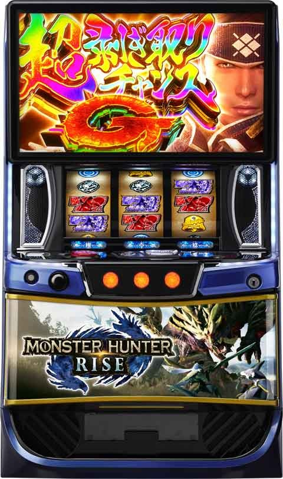
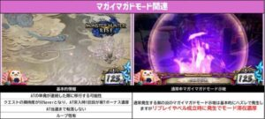
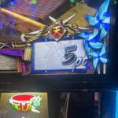
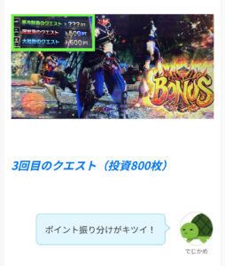
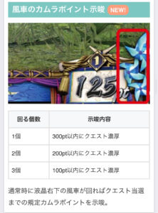
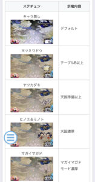
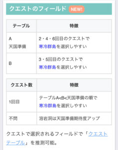
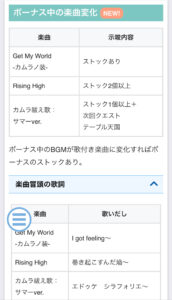
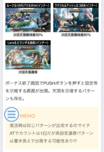

Lモンスターハンターライズ

【天井情報】
999G+α 赤7ボーナス以上
AT間7回目のクエスト 赤7ボーナス以上
カムラポイント600pt
クエスト当選 1周期平均150Gくらい(かなりブレる)
【リセット判別】
不明
【有利区間について】
有利切れで百竜ノ淵源チャレンジ突入。
有利区間切れ条件
差枚+2100枚到達でエンディングに移行。
差枚マイナス時の15頭撃破後の百竜ノ淵源チャレンジでは有利切れていない報告あり
狙い目
リセット狙い
リセット後は複数の恩恵があるため、通常時よりも浅いゲーム数から狙うことが可能です。
リセット時単体での狙い目
- 実ゲーム数: 400Gから
- クエスト周期: 5周期目から
- カムラポイント: 400ptから
朝二狙い（リセット後の2回目の初当たり狙い）
朝イチの初当たりが300G以上ハマっている場合、次回天国準備モードが想定されるため、ボーダーを下げて狙うことができます。
- 1周期目のみ: カムラポイント400ptから
- 実ゲーム数: 500Gから
- クエスト周期: 5周期目から
AT間・周期・カムラポイント天井狙い
「実ゲーム数」「クエスト周期」「カムラポイント」の3つの要素を複合的に見て、ボーダーを調整することが重要です。
単体での狙い目
- 実ゲーム数: 670Gから
- クエスト周期: 6周期目から
- カムラポイント: 480ptから
- ※ボーダー下げ要素: メニュー履歴から300pt・500ptで連続当選しており、その後天国に当選していない場合は、400ptから狙えます。
ボーダー調整の例
以下のように、複数の要素を組み合わせて柔軟に立ち回りましょう。
- 例1: 実G数600G + 5周期目 + カムラポイント0pt
- 例2: 実G数500G + 5周期目 + カムラポイント200pt
カムラポイント狙いが絡む場合は、ポイント解放の煽りを見てから、その後のクエストを消化するかどうかの押し引きを判断しましょう。
マガイマガドモード（マガマガモード）狙い
AT単発（駆け抜け）が連続すると突入のチャンスとなる特殊モード（マガマガモード別名MMモード）。クエストの成功率が50％以上となり、初回ボーナスで紫7（BB）に書き換えされる強力な恩恵があります。
MMモード突入の推測
- 3連駆け抜けが12.4%、4連続駆け抜けが25%、5連続駆け抜けは50%でMMモードに突入します。
- 紫7（初回ボーナスで獲得枚数220枚以上）が連続している台は、MMモードに滞在している可能性が高まります。
- MMモード滞在(突入)時の履歴は例えば、3〜4回連続で駆け抜けていて、直近のボーナスが220枚以上（紫７）の場合や、3連続駆け抜け後の次回・次々回が紫7濃厚な履歴がある場合はMMモードの可能性があります。
MMモードの狙い目
- 駆け抜け3連続後 かつ 前回ボーナスが紫7濃厚: 0Gからボーナス当選まで。
- 駆け抜け4連続後: 0Gからボーナス当選まで。
※上記0Gからの狙いは、機械割100%前後とされます。主に5連続駆け抜けを狙うための布石としての立ち回りです。 - 駆け抜け5連続以上: 0Gからボーナス当選まで。
- 【慎重派】: 4連続駆け抜け以下で、前回が紫7以外の場合は、400Gまたは4周期目から。
MMモード狙い目のやめ時
- 初当たりで紫7以外のボーナスが出現したらヤメ。
- 一度モードに突入し、初当たりが紫7だった場合は、モード滞在を否定するまで続行。
- 紫7以外のボーナスで駆け抜けた場合でも、再度MMモード狙いの条件に該当するなら続行。
MMモード滞在が【濃厚】となる演出
次の演出が発生した場合は、MMモード滞在が確定します。次回ボーナス当選まで続行しましょう。
- マガイマガドの「顔」が出現
- 液晶画面に紫色のマガイマガドの顔がはっきりと浮かび上がる演出は、滞在濃厚のサインです。
- 【重要】紫エフェクト + 特定の成立役
- 後述の「紫のエフェクト演出」が、リプレイまたはベルの成立時に発生した場合は、MMモード滞在が濃厚となります。
- ステージチェンジ時のミニキャラ
- ステージチェンジの際に表示されるアイキャッチで、「マガイマガド」のキャラクターが出現すると、MMモード滞在の期待度がアップします。
MMモード滞在の【期待度がアップ】する演出
次の演出は、MMモード滞在の可能性を示唆します。複数回確認できる場合は、滞在期待度がさらに高まります。
- 紫のエフェクト演出（ハズレ成立時）
- 液晶に紫色のモヤのようなエフェクトが発生する演出です。
- ハズレ時に発生した場合はMMモード滞在に少し期待できる程度です。
- この演出が頻発すれば滞在期待度はアップします。

その他狙い目
上位AT後狙い
- 恩恵: 上位AT後は天国モード確定です。
- 狙い目: AT終了後、周期表示が「天」なら1クエスト消化まで。
- 見抜き方: 液晶の周期表示が「天」になります。また、データカウンター上でAT終了後2G以降にBB信号が上がるのが上位ATのサインです（店舗のデータ機によっては表示されない場合あり）。

アイルーだるま落とし狙い
- 仕様: リプレイ400回（液晶の座布団が5枚消化）で天井。リプレイ残り10回からカウントダウンが発生。液晶の座布団の数で現在の周期を示唆しています。
- 狙い目: 座布団が3枚以下の状態ならリプレイが残り3回から狙う。座布団が5枚になっても単体狙いは基本的に厳しいです。差枚数やMMモードの状況と合わせて押し引きを判断しましょう。
カムラポイントモード狙い
- 仕様: AT終了後のカムラポイントの履歴でモードを推測できます。
- 狙い目: 履歴で「500pt(モードB)→600pt(モードC昇格濃厚)」のように、ポイントが昇格している場合、次回はモードDの可能性がアップするため、100ptのゾーンを確認する価値があります。規定ポイントに到達し、背景が点滅するなどの煽りが発生している場合は、その煽りを消化してからヤメましょう。

有利区間切れ狙い
差枚数がプラス域に大きく振り切れている場合に狙えます。
メニュー画面で「百竜ノ淵源チャレンジ」の回数が0回なら、上位ATには突入していないと判断できます。
差枚+1600枚以上: カムラポイント300ptから1周期のみ消化。
差枚+1800枚以上: 0Gから1周期目のみ消化。※注意点:
途中でマイナス差枚の上位ATは有利区間切断してない可能性があります。
やめ時
- 基本: AT終了後、即ヤメ。
- AT終了後1G目にレア役: AT当選濃厚のため続行。
- 上位AT後: 天国濃厚のため、1クエスト消化まで。
- 前回天国準備濃厚時: クエスト当選まで続行を検討。
- その他、各種終了画面や示唆内容に応じて1クエスト消化などを判断します。
その他
風車のカムラポイント示唆

ステチェン示唆

クエストフィールド示唆

ボーナス中の楽曲変化

終了画面

参考元
基本情報
- メーカー: アデリオン
- 機械割: 97.9% 〜 114.3%
- 導入開始日: 2024年11月18日（月）
- ゲーム性概要: ●純増約2.7枚or4.0枚/GのAT機 ●初当り確率は約1/309（設定1） ●ATはモンスター討伐で継続となるおなじみのゲーム性 ●上位AT・ツラヌキ要素など、スマスロならではの新規要素も満載


打ち方
打ち方・小役
通常時の打ち方（小役狙い）
「最初に狙う絵柄」

左リールにBARを狙う。取りこぼす可能性があるのは中リールのスイカのみなので、ハサミ打ちもオススメだ。
「スイカ停止時」

中リールにBARを目安にスイカを狙う。右リールは紫7がスイカの代用となるため、フリー打ちでOK。
「レア役の停止形」

ボーナス中の打ち方

押し順ナビ通りに消化すればOK。ナビなし時は通常時と同様に左リールBAR狙い。
変則押しはNG
通常時は左リール第1停止での消化を推奨する。
解析情報通常時
小役関連
小役確率
| 役 | 確率 |
|---|---|
| リプレイ | 1/7.3 |
| 3枚ベル | 1/8.1 |
| ハズレ3枚 | 1/6.5 |
| スイカ | 1/105.3 |
| 弱チャンス目 | 1/99.9 |
| 強チャンス目 | 1/585.1 |
| 弱チェリー | 1/114.9 |
| 強チェリー | 1/532.8 |
| レア役合算 | 1/31.4 |
ライズゾーン当選率 弱チェリー・スイカ
| 設定 | 通常 | 高確 | 超高確 |
|---|---|---|---|
| 1 | 25.0% | 55.1% | 100% |
| 2 | 25.4% | 55.5% | 100% |
| 3 | 28.1% | 56.3% | 100% |
| 4 | 30.5% | 57.4% | 100% |
| 5 | 34.4% | 59.4% | 100% |
| 6 | 35.2% | 60.2% | 100% |
強チェリー・チャンス目
| 設定 | 通常 | 高確 | 超高確 |
|---|---|---|---|
| 全設定共通 | 100% | 100% | 100% |
強レア役は内部状態不問でライズゾーン当選濃厚で、超高確中はライズゾーンを2個ストック。 ライズゾーンでクエスト（規定カムラポイント到達）に当選した場合はクエストを優先して放出。フェイク前兆だった場合はクエスト終了後、本前兆だった場合はボーナス後にライズゾーンが放出される。
内部状態関連
内部状態概要
| 項目 | 内容 |
|---|---|
| 状態の種類 | 通常＜高確＜超高確 |
| 昇格契機 | ベル・レア役成立時の抽選 |
| 状態で変化する要素 | 弱レア役成立時のライズゾーン当選率 |
| 保障ゲーム数 | 20G |
| 転落契機（※） | ハズレ目（3枚）or押し順ベルこぼし |
※転落は保障ゲーム数消化後から抽選、ライズゾーン終了後は通常へ
［弱チェリー・スイカ］内部状態昇格率
| 役 | 通常→高確 | 高確→超高確 |
|---|---|---|
| 弱チェリー・スイカ | 62.5% | 62.5% |
内部状態転落率
| 役 | 高確→通常 | 超高確→高確 |
|---|---|---|
| ハズレ | 12.5% | 6.3% |
内部状態の昇格・転落ともに1段階ずつ。高確以上に当選した場合、20Gの保障ゲーム消化後から転落が抽選される。
モード
ポイントモード概要
通常時はA〜Dの4種類のモードでクエスト当選までのカムラポイントを管理。クエスト当選を契機にモード移行が抽選され、モードDへ到達するまで転落はしない。
ポイントモードの特徴
| モード | 特徴 | 天井ポイント |
|---|---|---|
| モードA | 百の位が偶数でクエストに当選しやすい | 600pt |
| モードB | 百の位が奇数でクエストに当選しやすい | 500pt |
| モードC | 百の位が偶数でクエストに当選しやすい | 600pt |
| モードD | 100ptでクエストに当選 | 100pt |
モードごとのゾーン表
| ポイント | モードA | モードB | モードC | モードD |
|---|---|---|---|---|
| 100pt | △ | △ | △ | 天井 |
| 200pt | 〇 | △ | 〇 | ー |
| 300pt | △ | ◎ | ▲ | ー |
| 400pt | 〇 | △ | 〇 | ー |
| 500pt | △ | 天井 | ▲ | ー |
| 600pt | 天井 | ー | 天井 | ー |
※期待度…△＜▲＜◯＜◎
マガイマガドモード性能
| 項目 | 内容 |
|---|---|
| 突入契機 | ボーナス単発終了が連続した場合の一部 |
| 恩恵 | フェイク前兆当選時に約50%で成功に書き換えかつ、 初回のボーナスが紫7ボーナス濃厚 |
| 転落契機 | 書き換え抽選に当選時の59.4% |
マガイマガドモード移行率
| ボーナス単発回数 | 移行率 |
|---|---|
| 1回 | ー |
| 2連続 | 0.4% |
| 3連続 | 12.5% |
| 4連続 | 25.0% |
| 5連続～ | 50.0% |
フェイク前兆時の本前兆書き換え当選率
| 設定 | 当選率 |
|---|---|
| 全設定共通 | 約50% |
規定カムラポイントに到達し、 フェイク前兆だった場合に約50%で成功に書き換える ので、クエスト（前兆）の期待度は最低でも50%。書き換え抽選に当選した場合に転落が抽選されるため、本前兆に当選していた場合やCZ・直撃でボーナスに当選した場合は転落しない。
モードD滞在時
どの状態からでもモードDへ移行する可能性があり、モードC滞在時は次回モードD濃厚になる（モード移行契機はクエスト当選時）。
カムラポイント
カムラポイント概要

通常時はベルとレア役で液晶右下のカムラポイントを貯めていき、規定ポイント到達でクエスト（前兆）へ移行。クエストを成功させればボーナス当選となる。カムラポイント獲得の特化ゾーン「ライズゾーン」も存在する。
カムラポイント性能
| 項目 | 内容 |
|---|---|
| 規定ポイント | 100～600pt |
| 規定ポイント到達時 | クエスト（前兆）へ移行 |
| 獲得ポイント | ベル→5pt、弱レア役→10pt、強レア役→20pt ポイント特化ゾーンの「ライズゾーン」もアリ |
ライズゾーン
ライズゾーン概要

1セット5Gのカムラポイント獲得特化ゾーン。毎ゲーム、カムラポイントとライズゾーンのセット継続率が加算されていき、セット終了時の継続率で継続をジャッジ。最大の20セット継続時は紫7ボーナスに当選する。
ライズゾーン性能
| 項目 | 内容 |
|---|---|
| 当選契機 | レア役成立時の抽選（強レア役は当選濃厚） |
| 継続ゲーム数 | 5G/セット |
| 消化中の抽選 | カムラポイント獲得＆継続率加算（5～300pt） |
| その他 | 20セット継続させれば紫7ボーナスに当選 |
実質ライズゾーン確率
| 設定 | 確率 |
|---|---|
| 1 | 1/75.6 |
| 2 | 1/75.2 |
| 3 | 1/72.9 |
| 4 | 1/71.8 |
| 5 | 1/68.9 |
| 6 | 1/68.2 |
成立役別・ポイント獲得期待度序列
| 役 | 序列 |
|---|---|
| ハズレ | 低 |
| リプレイ | ↓ |
| ベル | ↓ |
| 弱レア役 | ↓ |
| 強レア役 | 高 |
［カムラポイント＆継続率加算］

1〜4G目は、カムラポイントと継続率を加算。10ptなら10%加算のように、獲得ポイントと加算継続率はリンクしている。100%を超えた分は次のセットに持ち越しされる。
［継続ジャッジ］

5G目にモンスター討伐で次セットへ継続。 20セット継続させた場合は紫7ボーナス当選となるが、それまでに貯めていたカムラポイントはAT後に持ち越されるのでムダにはならない（エンディング到達時を除く）。
［倍アイコン］

獲得ポイントを表示された倍数分獲得できるアイコン。継続時の成立役に応じて獲得を抽選していて、5の倍数セット継続時は役不問で獲得できる。
カムラポイント振り分け
1〜4G目はカムラポイントと継続率を加算。5G目（継続成功時）は継続率のみが加算される。
［1～4G目］獲得ポイント（継続率）振り分け
| ポイント | ハズレ | リプレイ | ベル | 弱レア役 | 強レア役 |
|---|---|---|---|---|---|
| 5pt | 100% | ー | ー | ー | ー |
| 10pt | ー | 80.1% | 50.0% | ー | ー |
| 20pt | ー | ー | 46.1% | ー | ー |
| 30pt | ー | 19.1% | 3.1% | ー | ー |
| 50pt | ー | 0.4% | 0.4% | 75.0% | ー |
| 100pt | ー | 0.4% | 0.4% | 23.0% | 50.0% |
| 200pt | ー | ー | ー | 1.6% | 43.8% |
| 300pt | ー | ー | ー | 0.4% | 6.3% |
※獲得ポイントと同数の継続率を加算
［5G目］加算継続率振り分け
| 継続率 | ハズレ | リプレイ | ベル | 弱レア役 | 強レア役 |
|---|---|---|---|---|---|
| 20% | 100% | ー | ー | ー | ー |
| 30% | ー | 100% | 100% | 100% | 100% |
セット継続時・倍アイコン獲得当選率 5の倍数セット以外
| アイコン | ハズレ | リプレイ | ベル | 弱レア役 | 強レア役 |
|---|---|---|---|---|---|
| 非獲得 | 100% | 100% | 100% | ー | ー |
| 2倍 | ー | ー | ー | 100% | ー |
| 3倍 | ー | ー | ー | ー | 100% |
| 4倍 | ー | ー | ー | ー | ー |
5の倍数セット
| アイコン | ハズレ | リプレイ | ベル | 弱レア役 | 強レア役 |
|---|---|---|---|---|---|
| 非獲得 | ー | ー | ー | ー | ー |
| 2倍 | 100% | 100% | 100% | ー | ー |
| 3倍 | ー | ー | ー | 100% | ー |
| 4倍 | ー | ー | ー | ー | 100% |
5の倍数セット継続時は必ず倍アイコンを獲得。5の倍数セット以外はレア役を引けば獲得できる。
クエスト
クエスト概要

規定カムラポイント到達で移行する前兆状態。探索パートと狩猟パートの2部構成で、狩猟パートでは出現するモンスターや期待度を示唆する多彩な演出が発生する。最終的に狩猟パートでモンスターを狩猟できればボーナス確定だ。 基本的にクエストへ移行した時点で当否は決まっているが、狩猟パートでレア役を引けば勝利書き換えのチャンスとなる。
クエスト性能
| 項目 | 内容 |
|---|---|
| 当選契機 | 規定カムラポイント到達時 |
| 平均期待度 | 約36% |
| 消化中の抽選 | 狩猟パート中のレア役で成功書き換え抽選 |
［探索パート］

モンスターが弱る・縄張り争いでいなくなるなど、さまざまなチャンスアップが発生する。
［狩猟パート］

タイトル色でも期待度が示唆される。
クエストテーブル
モードA・モードB・天国準備・天国の4種類のテーブルがあり、滞在テーブルによってクエスト当選時の本前兆期待度が変化。テーブルはAT当選を契機に再抽選され、天国へ移行するまで転落はしない。 天国中にアイルーだるま落とし経由や直撃でボーナスに当選した場合、次回も天国濃厚となる。
クエストテーブルの特徴
| テーブル | 特徴 | 天井回数 |
|---|---|---|
| テーブルA | 偶数回目のクエストがチャンス | 7回目 |
| テーブルB | 奇数回目のクエストがチャンス | 7回目 |
| 天国準備 | 2回目以降のクエストがチャンス | 7回目 |
| 天国 | 1回目のクエストでボーナスに当選 | 1回目 |
クエストテーブルごとのクエスト回数別期待度
| クエスト | テーブルA | テーブルB | 天国準備 | 天国 |
|---|---|---|---|---|
| 1回目 | △ | △ | △ | 天井 |
| 2回目 | 〇 | ▲ | 〇 | ー |
| 3回目 | ▲ | 〇 | 〇 | ー |
| 4回目 | 〇 | ▲ | ◎ | ー |
| 5回目 | ▲ | 〇 | 〇 | ー |
| 6回目 | 〇 | ▲ | ◎ | ー |
| 7回目 | 天井 | 天井 | 天井 | ー |
※期待度…△＜▲＜◯＜◎
フェイク前兆中・狩猟パートのレア役での書き換え当選率
| 役 | 当選率 |
|---|---|
| 弱レア役 | 9.8% |
| 強レア役 | 100% |
抽選の対象になるゲーム数は4G間と短いが、強レア役はボーナス当選濃厚だ。
本前兆中・ボーナスストック当選率
| 役 | 当選率 |
|---|---|
| 弱レア役 | 0.4% |
| 強レア役 | 25.0% |
クエストフィールドの振り分け
クエストテーブルとクエストの回数によって、移行するフィールドの振り分けが変化する。
テーブルごとの選択フィールドの特徴
| テーブル | 特徴 |
|---|---|
| テーブルA | 2・4・6回目 のクエストで寒冷群島を選択しやすい |
| テーブルB | 3・5回目 のクエストで寒冷群島を選択しやすい |
| 天国準備 | 2・4・6回目 のクエストで寒冷群島を選択しやすい |
| 天国準備 | フェイク前兆時に溶岩洞移行で滞在期待度アップ |
［クエストテーブルA］フィールド振り分け フェイク前兆
| クエスト | 大社跡 | 寒冷群島 | 溶岩洞 |
|---|---|---|---|
| 1回目 | 89.7% | 10.0% | 0.3% |
| 2回目 | 9.7% | 90.0% | 0.3% |
| 3回目 | 90.0% | 9.7% | 0.3% |
| 4回目 | 9.7% | 90.0% | 0.3% |
| 5回目 | 90.0% | 9.7% | 0.3% |
| 6回目 | 9.7% | 90.0% | 0.3% |
| 7回目 | ー | ー | ー |
本前兆
| クエスト | 大社跡 | 寒冷群島 | 溶岩洞 |
|---|---|---|---|
| 1回目 | 58.9% | 33.3% | 7.8% |
| 2回目 | 25.5% | 66.7% | 7.8% |
| 3回目 | 66.7% | 25.5% | 7.8% |
| 4回目 | 25.5% | 66.7% | 7.8% |
| 5回目 | 66.7% | 25.5% | 7.8% |
| 6回目 | 25.5% | 66.7% | 7.8% |
| 7回目 | 66.7% | 25.5% | 7.8% |
［クエストテーブルB］フィールド振り分け フェイク前兆
| クエスト | 大社跡 | 寒冷群島 | 溶岩洞 |
|---|---|---|---|
| 1回目 | 79.7% | 20.0% | 0.3% |
| 2回目 | 90.0% | 9.7% | 0.3% |
| 3回目 | 9.7% | 90.0% | 0.3% |
| 4回目 | 90.0% | 9.7% | 0.3% |
| 5回目 | 9.7% | 90.0% | 0.3% |
| 6回目 | 90.0% | 9.7% | 0.3% |
| 7回目 | ー | ー | ー |
本前兆
| クエスト | 大社跡 | 寒冷群島 | 溶岩洞 |
|---|---|---|---|
| 1回目 | 58.9% | 33.3% | 7.8% |
| 2回目 | 66.7% | 25.5% | 7.8% |
| 3回目 | 25.5% | 66.7% | 7.8% |
| 4回目 | 66.7% | 25.5% | 7.8% |
| 5回目 | 25.5% | 66.7% | 7.8% |
| 6回目 | 66.7% | 25.5% | 7.8% |
| 7回目 | 25.5% | 66.7% | 7.8% |
［天国準備］フィールド振り分け フェイク前兆
| クエスト | 大社跡 | 寒冷群島 | 溶岩洞 |
|---|---|---|---|
| 1回目 | 67.1% | 30.0% | 2.9% |
| 2回目 | 7.1% | 90.0% | 2.9% |
| 3回目 | 90.0% | 7.1% | 2.9% |
| 4回目 | 7.1% | 90.0% | 2.9% |
| 5回目 | 90.0% | 7.1% | 2.9% |
| 6回目 | 7.1% | 90.0% | 2.9% |
| 7回目 | ー | ー | ー |
［天国］フィールド振り分け 本前兆
| クエスト | 大社跡 | 寒冷群島 | 溶岩洞 |
|---|---|---|---|
| 1回目 | 58.9% | 33.3% | 7.8% |
天国滞在時
天国へ移行するまでテーブルの転落はナシ。高設定ほど天国準備や天国へ移行しやすいので、早い回数のクエストでATに当選するケースが多くなる。
アイルーだるま落とし（CZ）
アイルーだるま落とし概要

リプレイが規定回数成立すると突入するチャンスゾーン。リプレイ40回成立で1周期となり、アイルーだるま落としのジャッジ演出が発生。最大200回目（5周期目）が天井となる。 5GのST型で、小役入賞でだるまを落としてSTを再セット。5個のだるまを落とせば成功で、1G間の報酬チャレンジで報酬を決める。
アイルーだるま落とし性能
| 項目 | 内容 |
|---|---|
| 当選契機 | リプレイ規定回数成立（最大200回） |
| 継続ゲーム数 | 5GのST型（※） |
| 消化中の抽選 | 小役入賞でだるまを落としていき、 全部（5個）落とせばボーナス |
| 成功期待度 | 約48% |
※だるまを1個も落とせなかった場合、1度だけ5Gを再セット
成立役別の落とすだるまの個数
| 役 | 個数 |
|---|---|
| リプレイ・ベル揃い | 1個 |
| 弱レア役 | 2個 |
| 強レア役 | 全部 |
報酬チャレンジ・成立役別の獲得報酬
| 役 | 報酬 |
|---|---|
| ハズレ | ボーナス当選 |
| リプレイ・ベル揃い | ボーナス2個 |
| 弱レア役 | ボーナス3個 |
| 強レア役 | 大連続ボーナス |
［だるま落とし］

［報酬チャレンジ］

液晶に表示されている通り、当該ゲームの成立役に対応した報酬を獲得できる。
［カットイン］

アイルーのカットイン発生で複数ストック以上（小役成立以上）濃厚だ。
百竜夜行（上位CZ）
百竜夜行概要

規定カムラポイント到達時の一部で突入するCZ。成功期待度が約70%と高いだけでなく、成功時は大連続ボーナスに当選。百竜夜行開始時に成功抽選（約50%で成功）がおこなわれ、漏れた場合は消化中のリプレイとレア役で書き換え抽選をおこなう。
百竜夜行性能
| 項目 | 内容 |
|---|---|
| 当選契機 | 規定カムラポイント到達時の一部 |
| 継続ゲーム数 | 12G |
| 消化中の抽選 | 突入時に成功抽選をおこない、 漏れた場合はリプレイとレア役で書き換え抽選 |
| 成功期待度 | 約70% |
| 成功時の恩恵 | 大連続ボーナス |
［砦レベル］

砦レベルが上がるほど成功期待度がアップ！
［ジャッジ］

百竜夜行成功当選率
| 抽選契機 | 当選率 |
|---|---|
| 開始時 | 約50% |
| リプレイ | 約20% |
| 弱レア役 | 約50% |
| 強レア役 | 100% |
※リプレイ・弱レア役・強レア役は開始時の抽選で非当選の場合の当選率
内部的に成功後のレア役では、ボーナスストック抽選がおこなわれる。
直撃抽選
ボーナス直撃抽選

通常時、非前兆中に引いたレア役でボーナス直撃が抽選される。
演出動画
ロングフリーズ
初回モンスターが百竜ノ淵源ナルハタタヒメ（討伐で超剥ぎ取りチャンスGストック）の超大連続ボーナスへ突入する、本機最強の激レア演出!!
フリーズ
ロングフリーズ


ロングフリーズ性能
| 項目 | 内容 |
|---|---|
| 発生契機 | リプレイの一部 |
| 抽選の条件 | 当該有利区間の差枚数が＋400枚以下でのみ抽選 （2000枚以上払い出せる状態でのみ抽選） |
| 恩恵 | 超大連続ボーナス＆ 初回モンスターが百竜ノ淵源ナルハタタヒメ （勝利で超剥ぎ取りチャンスG） |
| エンディング期待度 | 90%以上 |
解析情報ボーナス時
ボーナス（AT）
ボーナス概要

モンスターを討伐して、剥ぎ取りチャンスを経由して次セットへ継続という基本的なゲーム性は歴代シリーズを踏襲。仲間の参戦や状態異常などを駆使してモンスターを討伐しよう。
ボーナス性能
| 項目 | 内容 |
|---|---|
| 当選契機 | ● クエスト成功 ● CZ成功 ● 直撃抽選など |
| 保障ゲーム数 | ● BAR揃い…25G ● 赤7揃い…40or50G ● 紫7揃い…60or100G |
| 1Gあたりの純増 | ● BAR揃いor赤7揃い…約2.7枚 ● 紫7揃い…約4.0枚 |
| 消化中の抽選 | ● 成立役に応じてモンスターへのダメージを抽選 ● 仲間参戦、状態異常、アイルーチャンス、翔蟲システムなど多彩なダメージ要素アリ |
実質的なボーナス比率
| ボーナス | 比率 |
|---|---|
| BAR揃い | 約39% |
| 赤7・紫7揃い | 約61% |
［集会所］

ボーナス絵柄が揃うまでの準備状態。全役で仲間の参戦を抽選していて、最大の3人参戦後はレア役でボーナスストックを抽選する。
［状態異常］

毒・転倒・麻痺など、さまざまな状態異常が存在。状態異常中は大量ダメージに期待できる。
［アイルーチャンス］

レア役成立時に抽選される新規要素で、当選時は前兆を経由して発動。発動後は様々な行動でサポートしてくれる。
［翔蟲システム］

翔蟲揃いのたびにポイントを獲得していき、5pt獲得で鉄蟲糸技が発生しモンスターにダメージを与える。
［終了抽選］

残りゲーム数が0になった後のハズレ目でモンスターが逃走し、ボーナス終了。残り0Gになったゲームと、レア役成立の次ゲームはハズレ目でも終了しない。
ハンター一覧
| ハンター | 武器 | メイン蓄積 | サブ蓄積 |
|---|---|---|---|
| YOU | 太刀 | ー | 転倒 |
| ミランダ | 弓 | 毒 | 睡眠 |
| アッシュ | ハンマー | ー | 転倒 |
| Mimi★chan | スラッシュ アックス | ー | 転倒 |
| 隊長 | ランス | ー | 転倒 |
| MG-滅-ワドウ丸 | ライトボウガン | 麻痺 | 毒 |
| ルーク | ガンランス | ー | 転倒 |
| Lara | 狩猟笛 | ー | 転倒 |
| つばき | 大剣 | 睡眠 | 転倒 |
| HARUTO | 双剣 | 転倒 | 麻痺 |
ハンターごとの得意・超得意モンスター
| ハンター | 得意 | 超得意 |
|---|---|---|
| YOU | ー | ー |
| ミランダ | トビカガチ タマミツネ | オロミドロ |
| アッシュ | ヤツカダキ バルファルク | ヌシ・リオレイア |
| Mimi★chan | ゴシャハギ バルファルク | リオレウス |
| 隊長 | ベリオロス バルファルク | ティガレックス |
| MG-滅-ワドウ丸 | オロミドロ プケプケ | ゴシャハギ |
| ルーク | リオレウス ヌシ・リオレイア | バサルモス |
| Lara | トビカガチ ビシュテンゴ | ヤツカダキ |
| つばき | プケプケ バサルモス | タマミツネ |
| HARUTO | ビシュテンゴ ティガレックス | ベリオロス |
※バルファルク…奇しき赫耀のバルファルク
ハンターによって得意な状態異常が異なる。ハンターの攻撃時に内部的に状態異常値が蓄積されていき、一定量に達するとモンスターを状態異常にする。得意・超得意なモンスター討伐時は、状態異常や与えるダメージが優遇される（状態異常値の蓄積状況は上下キーを押すと確認可能）。
HIメンバーの組み合わせ
| パターン | 組み合わせ |
|---|---|
| 1 | ミランダ＆隊長＆Lara |
| 2 | アッシュ＆MG-滅-ワドウ丸＆つばき |
| 3 | Mimi★chan＆ルーク＆HARUTO |
上記の組み合わせで参戦すると討伐期待度がアップ！
モンスター一覧
| モンスター | 保障ゲーム数 | HPゲージ |
|---|---|---|
| 百竜ノ淵源ナルハタタヒメ | 100G | 6本 |
| トビカガチ | 25G | ２本 |
| プケプケ | 25G | ２本 |
| ビシュテンゴ | 25G | ２本 |
| バサルモス | 25G | ２本 |
| タマミツネ | 40G | ４本 |
| ベリオロス | 40G | ３本 |
| ゴシャハギ | 40G | ３本 |
| ティガレックス | 50G | 4本 |
| ヤツカダキ | 50G | 4本 |
| オロミドロ | 50G | 4本 |
| リオレウス | 40G | ３本 |
| ヌシ・リオレイア | 50G | 4本 |
| 奇しき赫耀のバルファルク | 70G | ５本 |
| マガイマガド | 60G | ５本 |
| ヌシ・ジンオウガ | 60G | ５本 |
モンスターごとの特徴
| モンスター | 特徴 |
|---|---|
| 百竜ノ淵源ナルハタタヒメ | ● 討伐時の報酬が超剥ぎ取りチャンスG（勝率72%） |
| トビカガチ | ● 報酬の剥ぎ取りチャンス金が剥ぎ取りチャンスGに昇格しやすい |
| プケプケ | ● バルファルクが乱入しやすい |
| ビシュテンゴ | ● 部位破壊しやすい |
| バサルモス | ● 部位破壊して討伐すると部位破壊分の報酬は剥ぎ取りチャンスG |
| タマミツネ | ● 部位破壊しやすい |
| ベリオロス | ● 15G以上残して討伐すれば必ず百竜刀-千変万化モード-に突入 |
| ゴシャハギ | ● 他の通常モンスターに比べて剥ぎ取りチャンスGが報酬になりやすい |
| ティガレックス | ー |
| ヤツカダキ | ● 翔蟲高確ゲーム数が長く、複数ポイントを獲得しやすい |
| オロミドロ | ー |
| リオレウス | ● 次回モンスターにヌシ・リオレイアが出てきやすい |
| ヌシ・リオレイア | ● 討伐時の報酬が剥ぎ取りチャンスG |
| 奇しき赫耀のバルファルク | ● 乱入で登場するモンスター ● 討伐時の報酬が剥ぎ取りチャンスG |
| マガイマガド | ● ゲーム数が多く、勝率が他のモンスターに比べて高い（勝率66％） |
| ヌシ・ジンオウガ | ● ゲーム数が多く、勝率が他のモンスターに比べて高い（勝率66％） ● 討伐時の剥ぎ取りチャンスで大連続ボーナスを獲得 |
モンスターごとの能力・耐久値
| モンスター | 攻撃力 | 防御力 | 素早さ | 毒耐性 | 転倒 耐性 | 麻痺 耐性 | 睡眠 耐性 |
|---|---|---|---|---|---|---|---|
| 百竜ノ淵源 ナルハタタヒメ | 5 | 5 | 1 | 5 | 3 | 5 | 5 |
| トビカガチ | 3 | 2 | 5 | 1 | 5 | 3 | 3 |
| プケプケ | 2 | 2 | 3 | 5 | 5 | 2 | 2 |
| ビシュテンゴ | 2 | 2 | 5 | 5 | 1 | 3 | 3 |
| バサルモス | 3 | 3 | 1 | 3 | 5 | 3 | 2 |
| タマミツネ | 3 | 1 | 5 | 2 | 3 | 5 | 1 |
| ベリオロス | 4 | 3 | 5 | 3 | 1 | 5 | 3 |
| ゴシャハギ | 4 | 4 | 1 | 3 | 5 | 1 | 5 |
| ティガレックス | 5 | 3 | 3 | 3 | 2 | 3 | 3 |
| ヤツカダキ | 2 | 5 | 1 | 5 | 3 | 3 | 3 |
| オロミドロ | 4 | 3 | 3 | 1 | 3 | 2 | 5 |
| リオレウス | 4 | 3 | 3 | 5 | 3 | 3 | 3 |
| ヌシ・ リオレイア | 5 | 3 | 3 | 5 | 3 | 5 | 5 |
| 奇しき赫耀の バルファルク | 5 | 4 | 3 | 5 | 3 | 5 | 5 |
| マガイマガド | 4 | 2 | 3 | 3 | 3 | 3 | 3 |
| ヌシ・ ジンオウガ | 4 | 2 | 3 | 3 | 3 | 3 | 3 |
モンスターごとに特徴や勝利時の報酬が異なる。能力・耐性の数値は低いほどハンターが有利（トビカガチは毒耐性が1なので毒状態になりやすいなど）。
［モンスターの情報］

ボーナス開始時や上下キーを押すと、モンスターの情報を確認できる。討伐中は状態異常値の蓄積状況も表記される。
ボーナス中の前作から変更・追加されたおもな要素
| 要素 | 内容 |
|---|---|
| 純増 | ● 紫7揃いのボーナス、大連続ボーナス中は約4.0枚/G、その他は約2.7枚/Gの変動型 ● 純増がつねに約4.0枚/Gの上位ATあり |
| 与えダメージ要素 | ● 翔蟲システム、アイルーチャンスの追加 ● 拘束中も仲間が参戦する可能性あり ● 鬼人薬の効力が7G→10Gに延長 ● 狩猟笛を使用するハンターが攻撃しながら鬼人効果を発動 ● レア役（翔蟲揃い含む）でベル連が途切れない |
昇格チャレンジ


ボーナスの一部で発生。ボタン連打で出現するモンスター（ボーナスの種類）が昇格していく。 昇格順はBAR揃い→赤7揃い→マガイマガドor奇しき赫耀のバルファルク→ヌシ・ジンオウガ→大連続ボーナスの順だ。
エンタチャンス

ボーナス終了後1G目（通常時へ戻ったゲーム）でレア役が成立した場合、ボーナス引き戻し濃厚。強レア役時は紫7揃い以上も濃厚となる。エンタチャンスでの引き戻し時はモンスターの討伐数が引き継がれる。
金冠付きのモンスター

モンスター名の右横に金冠が付いていることがあり、金冠付きのモンスターを討伐できれば報酬が剥ぎ取りチャンスGとなるのでアツい。 設定変更後1回目のボーナス時は、約50%で金冠が付く。
※ヌシ・リオレイア、奇しき赫耀のバルファルク、百竜ノ淵源ナルハタタヒメに金冠は付かない
仲間参戦当選率
| 役 | 一人参戦 | 全員参戦 |
|---|---|---|
| 下記以外 | 9.4% | ー |
| 弱レア役 | 100% | ー |
| 強レア役 | ー | 100% |
全員参戦後・ボーナスストック当選率
| 役 | 当選率 |
|---|---|
| 弱レア役 | 25.0% |
| 強レア役 | 100% |
アイルーチャンス当選率
| 役 | 当選率 |
|---|---|
| 弱レア役 | 5.1% |
| 強レア役 | 50.0% |
当選時は前兆を経由してアイルーチャンスが発動。モンスターが拘束状態にある場合、アイルーチャンス抽選はおこなわれない。
［非めまい状態］アイルーチャンスの技振り分け
| 技 | ハズレ3枚役 | ベル | 翔蟲揃い |
|---|---|---|---|
| 強化太鼓 | 37.5% | 25.0% | ー |
| 閃光爆弾 | 37.5% | 25.0% | ー |
| 特大タル爆弾 | 12.5% | 25.0% | 49.6% |
| シビレガスガエル | 12.5% | 25.0% | 49.6% |
| オトモガルク | ー | ー | 0.4% |
| 怨虎竜操竜 | ー | ー | 0.4% |
| 技 | 弱レア役 | 強レア役 | リプレイ（※） |
| 強化太鼓 | ー | ー | ー |
| 閃光爆弾 | ー | ー | ー |
| 特大タル爆弾 | 25.0% | ー | ー |
| シビレガスガエル | 25.0% | ー | ー |
| オトモガルク | 25.0% | 50.0% | ー |
| 怨虎竜操竜 | 25.0% | 50.0% | 100% |
※大タル爆弾用のBAR揃いリプレイのみ、リプレイ揃いとして出現
［めまい状態］アイルーチャンスの技振り分け
| 技 | ハズレ3枚役 | ベル | 翔蟲揃い |
|---|---|---|---|
| 強化太鼓 | 37.5% | 25.0% | ー |
| 閃光爆弾 | ー | ー | ー |
| 特大タル爆弾 | 12.5% | 25.0% | 49.6% |
| シビレガスガエル | 50.0% | 50.0% | 49.6% |
| オトモガルク | ー | ー | 0.4% |
| 怨虎竜操竜 | ー | ー | 0.4% |
| 技 | 弱レア役 | 強レア役 | リプレイ（※） |
| 強化太鼓 | ー | ー | ー |
| 閃光爆弾 | ー | ー | ー |
| 特大タル爆弾 | 25.0% | ー | ー |
| シビレガスガエル | 25.0% | ー | ー |
| オトモガルク | 25.0% | 50.0% | ー |
| 怨虎竜操竜 | 25.0% | 50.0% | 100% |
※大タル爆弾用のBAR揃いリプレイのみ、リプレイ揃いとして出現
討伐モンスター数ごとのエンディング権利獲得当選率
| 討伐数 | 当選率 |
|---|---|
| 10頭 | 約10% |
| 11頭 | 約20% |
| 12頭 | 約30% |
| 13頭 | 約40% |
| 14頭 | 約50% |
| 15頭 | 100% |
権利獲得＝即エンディング移行ではなく、権利獲得後のボーナス終了（モンスター逃走かつストックなし）時にエンディングが発生する。
出現モンスター振り分け
| モンスター | ボーナス種別 | |||
|---|---|---|---|---|
| モンスター | 初回平均 | ボーナス | 赤7 | 紫7 |
| トビカガチ | 11.0% | 17.1% | ー | ー |
| プケプケ | 11.0% | 17.1% | ー | ー |
| ビシュテンゴ | 11.0% | 17.1% | ー | ー |
| バサルモス | 11.0% | 17.1% | ー | ー |
| タマミツネ | 7.5% | 4.4% | 13.7% | ー |
| ベリオロス | 7.5% | 4.4% | 13.7% | ー |
| ゴシャハギ | 7.2% | 4.0% | 13.7% | ー |
| ティガレックス | 7.2% | 4.0% | 13.7% | ー |
| ヤツカダキ | 7.2% | 4.0% | 13.7% | ー |
| オロミドロ | 7.2% | 4.0% | 13.7% | ー |
| リオレウス | 7.2% | 4.0% | 13.7% | ー |
| ヌシ・リオレイア | 1.0% | 0.8% | 1.6% | ー |
| マガイマガド | 3.8% | 2.0% | 2.4% | 96.1% |
| ヌシ・ジンオウガ | 0.2% | 0.1% | 0.1% | 3.9% |
剥ぎ取りチャンス種別振り分け
討伐したモンスターに応じて、剥ぎ取りチャンスの種別を抽選。金冠が付いているモンスター討伐時は必ず剥ぎ取りチャンスGになる。 剥ぎ取りチャンス金が選ばれた場合でも、剥ぎ取りチャンスGへ昇格する可能性あり。
討伐時・剥ぎ取りチャンスの種別振り分け
| モンスター | 剥ぎ取り チャンス金 | 剥ぎ取り チャンスG | 超剥ぎ取り チャンスG |
|---|---|---|---|
| 下記以外 | 99.9% | 0.1% | ー |
| ゴシャハギ | 96.4% | 3.7% | ー |
| ヌシ・リオレイア | ー | 100% | ー |
| 奇しき赫耀のバルファルク | ー | 100% | ー |
| 百竜ノ淵源ナルハタタヒメ | ー | ー | 100% |
剥ぎ取りチャンス金当選時・ 剥ぎ取りチャンスG昇格当選率
| モンスター | 当選率 |
|---|---|
| 下記以外 | 0.1% |
| トビカガチ | 1.9% |
昇格で剥ぎ取りチャンスGを獲得した場合、1回目の剥ぎ取りは必ず成功する。
仲間参戦＆ハンターの攻撃抽選

ボーナス中・仲間参戦当選率
| ベル回数 | 仲間0人滞在 | 仲間1人滞在 | 仲間2人滞在 |
|---|---|---|---|
| 1回 | 20.3% | 14.8% | 7.8% |
| 2連 | 35.2% | 21.9% | 15.6% |
| 3～4連 | 50.0% | 28.9% | 23.4% |
| 5連～ | 87.5% | 50.0% | 39.1% |
当選した場合は、参戦していない仲間の中からランダムでいずれかのハンターが参戦する。
［ハンター攻撃選択時］攻撃するキャラ振り分け
| 攻撃 キャラ | 仲間の人数 | ||||
|---|---|---|---|---|---|
| 攻撃 キャラ | 仲間0人 | 仲間1人 | 仲間2人 | 仲間3人 （LOW） | 仲間3人 （HI） |
| YOU | 100% | 48.0% | 31.3% | 22.5% | 15.0% |
| 協力攻撃 | ー | 2.0% | 2.1% | 2.5% | 10.0% |
| 仲間A | ー | 50.0% | 33.3% | 25.0% | 25.0% |
| 仲間B | ー | ー | 33.3% | 25.0% | 25.0% |
| 仲間C | ー | ー | 25.0% | 25.0% |
※仲間3人（HI）は、相性の良い仲間3人の組み合わせで参戦している場合
［仲間3人かつ、協力攻撃選択時］攻撃種別振り分け
| 種別 | 仲間3人（LOW） | 仲間3人（HI） |
|---|---|---|
| 2人攻撃 | 76.0% | 51.2% |
| 3人攻撃 | 21.2% | 36.3% |
| 4人攻撃 | 2.8% | 12.5% |
各ハンターの行動振り分け
| 攻撃 | YOU | ミランダ | アッシュ | |||
|---|---|---|---|---|---|---|
| 弱攻撃 | 92.2% | 85.5% | 52.4% | |||
| 強攻撃 | 7.8% | 14.5% | ー | |||
| 長押し攻撃 | ー | ー | ー | |||
| 強カウンター | ー | ー | ー | |||
| 鬼人笛 | ー | ー | ー | |||
| 気炎の旋律 | ー | ー | ー | |||
| 強レア役 | ー | ー | ー | |||
| 溜め攻撃1 | ー | ー | 30.6% | |||
| 溜め攻撃2 | ー | ー | 16.0% | |||
| 溜め攻撃3 | ー | ー | 1.0% | |||
| 攻撃 | Mimi★chan | 隊長 | MG-滅-ワドウ丸 | |||
| 弱攻撃 | 81.4% | 61.1% | 66.7% | |||
| 強攻撃 | ー | 19.3% | 33.3% | |||
| 長押し攻撃 | 18.6% | ー | ー | |||
| 強カウンター | ー | 19.6% | ー | |||
| 鬼人笛 | ー | ー | ー | |||
| 気炎の旋律 | ー | ー | ー | |||
| 強レア役 | ー | ー | ー | |||
| 溜め攻撃1 | ー | ー | ー | |||
| 溜め攻撃2 | ー | ー | ー | |||
| 溜め攻撃3 | ー | ー | ー | |||
| 攻撃 | ルーク | Lara | つばき | HARUTO | ||
| 弱攻撃 | 54.8% | 44.2% | 52.8% | 73.7% | ||
| 強攻撃 | ー | 28.6% | ー | 26.3% | ||
| 長押し攻撃 | ー | ー | ー | ー | ||
| 強カウンター | ー | ー | ー | ー | ||
| 鬼人笛 | ー | 12.1% | ー | ー | ||
| 気炎の旋律 | ー | 15.8% | ー | ー | ||
| 強レア役 | ー | ー | ー | ー | ||
| 溜め攻撃1 | 26.2% | ー | 30.3% | ー | ||
| 溜め攻撃2 | 17.5% | ー | 15.9% | ー | ||
| 溜め攻撃3 | 1.5% | ー | 1.0% | ー |
※全モンスターの平均値
仲間の参戦に関連する要素
| 状態 | 要素 |
|---|---|
| 非めまい状態 | ● 参戦している人数 ● モンスターの素早さ ● ベルの連続回数 |
| めまい状態 | ● 参戦している人数 ● モンスターの素早さ ● ベルorハズレ3枚のどちらが成立したか |
モンスターごとの素早さ
| 素早さ | モンスター |
|---|---|
| 1 | 百竜ノ淵源ナルハタタヒメ、バサルモス、 ゴシャハギ、ヤツカダキ |
| 3 | プケプケ、ティガレックス、オロミドロ、リオレウス、 ヌシ・リオレイア、奇しき赫耀のバルファルク、 マガイマガド、ヌシ・ジンオウガ |
| 5 | トビカガチ、ビシュテンゴ、タマミツネ、ベリオロス |
［非めまい状態］ハンターの行動発生率 モンスターの素早さが「1」
| ベル連 | 仲間0人滞在 | 仲間1人滞在 | 仲間2人滞在 | 仲間3人滞在 |
|---|---|---|---|---|
| 1回 | 7.6% | 8.9% | 10.2% | 10.2% |
| 2連 | 37.5% | 43.8% | 50.0% | 50.0% |
| 3～4連 | 55.7% | 64.9% | 74.2% | 74.2% |
| 5連～ | 75.0% | 87.5% | 100% | 100% |
モンスターの素早さが「3」
| ベル連 | 仲間0人滞在 | 仲間1人滞在 | 仲間2人滞在 | 仲間3人滞在 |
|---|---|---|---|---|
| 1回 | 6.3% | 7.6% | 8.9% | 10.2% |
| 2連 | 31.2% | 37.5% | 43.8% | 50.0% |
| 3～4連 | 46.4% | 55.7% | 64.9% | 74.2% |
| 5連～ | 62.5% | 75.0% | 87.5% | 100% |
モンスターの素早さが「5」
| ベル連 | 仲間0人滞在 | 仲間1人滞在 | 仲間2人滞在 | 仲間3人滞在 |
|---|---|---|---|---|
| 1回 | 5.1% | 6.3% | 7.6% | 8.9% |
| 2連 | 25.0% | 31.2% | 37.5% | 43.8% |
| 3～4連 | 37.1% | 46.4% | 55.7% | 64.9% |
| 5連～ | 50.0% | 62.5% | 75.0% | 87.5% |
［めまい状態］ハンターの行動発生率 モンスターの素早さが「1」
| 役 | 仲間0人滞在 | 仲間1人滞在 | 仲間2人滞在 | 仲間3人滞在 |
|---|---|---|---|---|
| ハズレ3枚 | 27.0% | 31.4% | 35.9% | 35.9% |
| ベル | 75.0% | 87.5% | 100% | 100% |
モンスターの素早さが「3」
| 役 | 仲間0人滞在 | 仲間1人滞在 | 仲間2人滞在 | 仲間3人滞在 |
|---|---|---|---|---|
| ハズレ3枚 | 22.5% | 27.0% | 31.4% | 35.9% |
| ベル | 62.5% | 75.0% | 87.5% | 100% |
モンスターの素早さが「5」
| 役 | 仲間0人滞在 | 仲間1人滞在 | 仲間2人滞在 | 仲間3人滞在 |
|---|---|---|---|---|
| ハズレ3枚 | 18.0% | 22.5% | 27.0% | 31.4% |
| ベル | 50.0% | 62.5% | 75.0% | 87.5% |
［通常モンスター］ハンター行動時の振り分け 非めまい状態
| 役 | ハンター攻撃 | 鬼人薬 | 毒投げクナイ | 閃光玉 |
|---|---|---|---|---|
| ベル1回 | 100% | ー | ー | ー |
| ベル2連 | 98.44% | 0.78% | ー | 0.78% |
| ベル3～4連 | 97.38% | 1.05% | ー | 1.05% |
| ベル5連～ | 94.54% | 2.34% | 0.39% | 1.56% |
| ハズレ3枚 | ー | ー | ー | ー |
| 弱レア役 | 66.80% | 12.90% | 1.56% | 12.89% |
| 強レア役 | ー | ー | ー | ー |
| 役 | 大タル爆弾 | シビレ罠 | 落とし穴 | YOU最強攻撃 |
| ベル1回 | ー | ー | ー | ー |
| ベル2連 | ー | ー | ー | ー |
| ベル3～4連 | ー | 0.44% | 0.07% | 0.01% |
| ベル5連～ | 0.39% | 0.66% | 0.10% | 0.02% |
| ハズレ3枚 | ー | ー | ー | ー |
| 弱レア役 | 1.95% | 3.28% | 0.52% | 0.10% |
| 強レア役 | 25.00% | 63.06% | 10.01% | 1.93% |
めまい状態
| 役 | ハンター攻撃 | 鬼人薬 | 毒投げクナイ | 閃光玉 |
|---|---|---|---|---|
| ベル1回 | 94.53% | ー | ー | ー |
| ベル2連 | 92.97% | 0.39% | ー | ー |
| ベル3～4連 | 91.41% | 0.78% | ー | ー |
| ベル5連～ | 86.72% | 2.34% | 0.39% | ー |
| ハズレ3枚 | ー | ー | ー | ー |
| 弱レア役 | 33.59% | 12.90% | 1.56% | ー |
| 強レア役 | ー | ー | ー | ー |
| 役 | 大タル爆弾 | シビレ罠 | 落とし穴 | YOU最強攻撃 |
| ベル1回 | ー | 4.60% | 0.73% | 0.14% |
| ベル2連 | ー | 5.58% | 0.89% | 0.17% |
| ベル3～4連 | ー | 6.57% | 1.04% | 0.20% |
| ベル5連～ | 0.39% | 8.54% | 1.36% | 0.26% |
| ハズレ3枚 | ー | ー | ー | ー |
| 弱レア役 | 1.95% | 42.04% | 6.67% | 1.29% |
| 強レア役 | 25.00% | 63.06% | 10.01% | 1.93% |
※通常モンスター…下表の古竜・ヌシモンスター以外のモンスター ※弱レア役…弱チェリー、スイカ 強レア役…強チェリー、チャンス目
［古竜・ヌシモンスター］ハンター行動時の振り分け 非めまい状態
| 役 | ハンター攻撃 | 鬼人薬 | 毒投げクナイ | 閃光玉 | ||
|---|---|---|---|---|---|---|
| ベル1回 | 100% | ー | ー | ー | ||
| ベル2連 | 98.44% | 0.78% | ー | 0.78% | ||
| ベル3～4連 | 97.37% | 1.05% | ー | 1.05% | ||
| ベル5連～ | 94.54% | 2.34% | 0.39% | 1.56% | ||
| ハズレ3枚 | ー | ー | ー | ー | ||
| 弱レア役 | 66.80% | 12.90% | 1.56% | 12.89% | ||
| 強レア役 | ー | ー | ー | ー | ||
| 役 | 大タル爆弾 | シビレガスガエル or速射砲 | YOU最強攻撃 | |||
| ベル1回 | ー | ー | ー | |||
| ベル2連 | ー | ー | ー | |||
| ベル3～4連 | ー | 0.51% | 0.02% | |||
| ベル5連～ | 0.39% | 0.76% | 0.02% | |||
| ハズレ3枚 | ー | ー | ー | |||
| 弱レア役 | 1.95% | 3.79% | 0.11% | |||
| 強レア役 | 25.00% | 72.84% | 2.16% |
めまい状態
| 役 | ハンター攻撃 | 鬼人薬 | 毒投げクナイ | 閃光玉 | ||
|---|---|---|---|---|---|---|
| ベル1回 | 94.53% | ー | ー | ー | ||
| ベル2連 | 92.97% | 0.39% | ー | ー | ||
| ベル3～4連 | 91.41% | 0.78% | ー | ー | ||
| ベル5連～ | 86.72% | 2.34% | 0.39% | ー | ||
| ハズレ3枚 | ー | ー | ー | ー | ||
| 弱レア役 | 33.59% | 12.90% | 1.56% | ー | ||
| 強レア役 | ー | ー | ー | ー | ||
| 役 | 大タル爆弾 | シビレガスガエル or速射砲 | YOU最強攻撃 | |||
| ベル1回 | ー | 5.31% | 0.16% | |||
| ベル2連 | ー | 6.45% | 0.19% | |||
| ベル3～4連 | ー | 7.58% | 0.23% | |||
| ベル5連～ | 0.39% | 9.87% | 0.29% | |||
| ハズレ3枚 | ー | ー | ー | |||
| 弱レア役 | 1.95% | 48.56% | 1.44% | |||
| 強レア役 | 25.00% | 72.84% | 2.16% |
※古竜・ヌシモンスター…ヌシ・リオレイア、ヌシ・ジンオウガ、奇しき赫耀のバルファルク、百竜ノ淵源ナルハタタヒメ ※弱レア役…弱チェリー、スイカ 強レア役…強チェリー、チャンス目
状態異常＆部位破壊ポイント抽選
ハンターが攻撃するごとに、 内部的に1pt以上の状態異常ポイントを加算 。各モンスターの規定ポイントに到達すると状態異常が発生する。 モンスターごとに存在する耐性の数値が低いほど状態異常になりやすいが、 一度状態異常になったモンスターは当該ボーナス中の耐性が1段階アップ する。
状態異常耐性値ごとの規定ポイント
| 耐性 | 規定ポイント |
|---|---|
| 耐性1 | 25pt |
| 耐性2 | 30pt |
| 耐性3 | 45pt |
| 耐性5 | 55pt |
例えば麻痺耐性1のゴシャハギが麻痺になった場合、次は麻痺耐性が2にアップ（規定ポイントが25pt→30ptに増加）。最大の耐性5まで麻痺するごとに1段階ずつアップしていく。
部位破壊発生までの規定ポイント
| モンスター | 規定ポイント |
|---|---|
| 百竜ノ淵源ナルハタタヒメ | 120pt |
| トビカガチ | 36pt |
| プケプケ | 39pt |
| ビシュテンゴ | 22pt |
| バサルモス | 46pt |
| タマミツネ | 33pt |
| ベリオロス | 53pt |
| ゴシャハギ | 61pt |
| ティガレックス | 71pt |
| ヤツカダキ | 85pt |
| オロミドロ | 75pt |
| リオレウス | 60pt |
| ヌシ・リオレイア | 71pt |
| 奇しき赫耀のバルファルク | 100pt |
| マガイマガド | 90pt |
| ヌシ・ジンオウガ | 90pt |
ハンター攻撃時の蓄積ポイント振り分け
| ポイント | 毒蓄積ポイント | |
|---|---|---|
| ポイント | ミランダ | MG-滅-ワドウ丸 |
| 1pt | ー | 18.3% |
| 2pt | ー | 18.3% |
| 3pt | ー | 18.0% |
| 5pt | 27.3% | 18.0% |
| 7pt | 29.7% | 12.5% |
| 10pt | 31.3% | 12.5% |
| 15pt | 7.8% | 1.6% |
| 20pt | 3.9% | 0.8% |
| ポイント | 眠り蓄積ポイント | |
| ポイント | つばき | ミランダ |
| 1pt | ー | 18.3% |
| 2pt | ー | 18.3% |
| 3pt | ー | 18.0% |
| 5pt | 27.3% | 18.0% |
| 7pt | 29.7% | 12.5% |
| 10pt | 31.3% | 12.5% |
| 15pt | 7.8% | 1.6% |
| 20pt | 3.9% | 0.8% |
| ポイント | 麻痺蓄積ポイント | |
| ポイント | MG-滅-ワドウ丸 | HARUTO |
| 1pt | ー | 18.3% |
| 2pt | ー | 18.3% |
| 3pt | ー | 18.0% |
| 5pt | 27.3% | 18.0% |
| 7pt | 29.7% | 12.5% |
| 10pt | 31.3% | 12.5% |
| 15pt | 7.8% | 1.6% |
| 20pt | 3.9% | 0.8% |
| ポイント | 転倒蓄積ポイント | |
| ポイント | HARUTO | その他 |
| 1pt | ー | 89.0% |
| 2pt | ー | 5.1% |
| 3pt | ー | 3.1% |
| 5pt | 26.6% | 1.6% |
| 7pt | 30.4% | 0.8% |
| 10pt | 31.3% | 0.4% |
| 15pt | 7.8% | ー |
| 20pt | 3.9% | ー |
| ポイント | 部位破壊蓄積ポイント | |
| ポイント | アッシュ | その他 |
| 1pt | ー | 34.7% |
| 2pt | ー | 30.1% |
| 3pt | 27.3% | 22.3% |
| 5pt | 30.5% | 7.4% |
| 7pt | 30.5% | 3.1% |
| 10pt | 7.8% | 1.6% |
| 15pt | 3.9% | 0.8% |
| 20pt | ー | ー |
複数の蓄積ポイント加算をおこなうハンター攻撃時は、それぞれのポイントが蓄積される（例えばYOU攻撃時は転倒と部位破壊の2つ、ミランダ攻撃時は毒・睡眠・部位破壊の3つのポイントを蓄積）。
ハンターの得意攻撃やモンスターごとの耐性値はコチラ
アイテムの継続ゲーム数振り分け
| 継続 ゲーム数 | 閃光玉 | |||
|---|---|---|---|---|
| 継続 ゲーム数 | 耐性1 | 耐性2 | 耐性3 | 耐性5 |
| 3G | ー | ー | ー | ー |
| 5G | 25.0% | 50.0% | 87.5% | ー |
| 7G | 44.9% | 35.2% | 9.8% | ー |
| 9G | 20.3% | 10.2% | 2.3% | ー |
| 11G | 9.8% | 4.6% | 0.4% | ー |
| 継続 ゲーム数 | 毒投げクナイ | |||
| 継続 ゲーム数 | 耐性1 | 耐性2 | 耐性3 | 耐性5 |
| 3G | ー | ー | ー | ー |
| 5G | ー | 40.6% | 54.7% | 97.2% |
| 7G | 33.6% | 40.6% | 35.9% | 1.6% |
| 9G | 33.2% | 12.5% | 6.3% | 0.8% |
| 11G | 33.2% | 6.3% | 3.1% | 0.4% |
| 継続 ゲーム数 | シビレ罠 | 落とし穴 | シビレ ガスガエル | YOU最強攻撃 |
| 3G | 35.6% | ー | 31.0% | ー |
| 5G | 39.4% | 34.7% | 39.2% | ー |
| 7G | 21.5% | 46.9% | 24.7% | 33.6% |
| 9G | 3.1% | 9.2% | 3.7% | 33.2% |
| 11G | 0.4% | 9.2% | 1.4% | 33.2% |
状態異常の継続ゲーム数振り分け
| 継続 ゲーム数 | 毒 | |||
|---|---|---|---|---|
| 継続 ゲーム数 | 耐性1 | 耐性2 | 耐性3 | 耐性5 |
| 3G | ー | ー | ー | ー |
| 5G | ー | 40.6% | 54.7% | 97.2% |
| 7G | 33.6% | 40.6% | 35.9% | 1.6% |
| 9G | 33.2% | 12.5% | 6.3% | 0.8% |
| 11G | 33.2% | 6.3% | 3.1% | 0.4% |
| 継続 ゲーム数 | 麻痺 | |||
| 継続 ゲーム数 | 耐性1 | 耐性2 | 耐性3 | 耐性5 |
| 3G | ー | ー | 50.0% | 83.2% |
| 5G | 39.1% | 44.5% | 37.4% | 10.2% |
| 7G | 39.1% | 44.5% | 10.2% | 5.4% |
| 9G | 15.5% | 9.4% | 1.6% | 0.8% |
| 11G | 6.3% | 1.6% | 0.8% | 0.4% |
| 継続 ゲーム数 | 転倒 | |||
| 継続 ゲーム数 | 耐性1 | 耐性2 | 耐性3 | 耐性5 |
| 3G | ー | ー | 50.0% | 83.2% |
| 5G | 39.1% | 44.5% | 37.4% | 10.2% |
| 7G | 39.1% | 44.5% | 10.2% | 5.4% |
| 9G | 15.5% | 9.4% | 1.6% | 0.8% |
| 11G | 6.3% | 1.6% | 0.8% | 0.4% |
モンスターの耐性によって継続ゲーム数が変化。耐性のない落とし穴などは、共通の振り分けで抽選される。
ハンター攻撃時のダメージ量振り分け
ハンターごとに（超）得意・不得意のないマガイマガド討伐中のダメージ振り分けを記載。討伐モンスターを得意とするハンターの攻撃時際は、記載している量以上のダメージを与えるケースもある。
※マガイマガドはHP4320（ゲージ1本あたり約860）
［非鬼人状態］ハンター攻撃時のダメージ振り分け
| ダメージ | YOU | |||||
|---|---|---|---|---|---|---|
| ダメージ | 弱攻撃 | 強攻撃 | ||||
| 1～50 | 48.8% | ー | ||||
| 51～100 | 26.8% | ー | ||||
| 101～151 | 24.4% | 60.6% | ||||
| 151～200 | ー | 30.9% | ||||
| 201～300 | ー | 7.1% | ||||
| 301～400 | ー | 1.3% | ||||
| 401～700 | ー | 0.1% | ||||
| 701～999 | ー | ー | ||||
| 1000～ | ー | ー | ||||
| ダメージ | 協力攻撃 | |||||
| ダメージ | 2人協力 | 3人協力 | 4人協力 | |||
| 1～50 | ー | ー | ー | |||
| 51～100 | ー | ー | ー | |||
| 101～151 | 37.7% | ー | ー | |||
| 151～200 | 53.5% | ー | ー | |||
| 201～300 | 7.9% | 95.0% | ー | |||
| 301～400 | 0.8% | 4.5% | 90.3% | |||
| 401～700 | 0.1% | 0.5% | 9.7% | |||
| 701～999 | ー | ー | ー | |||
| 1000～ | ー | ー | ー | |||
| ダメージ | ミランダ | |||||
| ダメージ | 弱攻撃 | 強攻撃 | ||||
| 1～50 | 76.4% | ー | ||||
| 51～100 | 11.8% | 35.8% | ||||
| 101～151 | 11.8% | 54.8% | ||||
| 151～200 | ー | 9.4% | ||||
| 201～300 | ー | ー | ||||
| 301～400 | ー | ー | ||||
| 401～700 | ー | ー | ||||
| 701～999 | ー | ー | ||||
| 1000～ | ー | ー | ||||
| ダメージ | 隊長 | |||||
| ダメージ | 弱攻撃 | 強攻撃 | 弱カウンター | 強カウンター | ||
| 1～50 | 40.2% | ー | ー | ー | ||
| 51～100 | 30.9% | ー | 49.9% | ー | ||
| 101～151 | 28.9% | 57.9% | 50.1% | ー | ||
| 151～200 | ー | 19.5% | ー | 50.3% | ||
| 201～300 | ー | 16.2% | ー | 40.7% | ||
| 301～400 | ー | 6.1% | ー | 7.9% | ||
| 401～700 | ー | 0.3% | ー | 1.1% | ||
| 701～999 | ー | ー | ー | ー | ||
| 1000～ | ー | ー | ー | ー | ||
| ダメージ | Lara | |||||
| ダメージ | 弱攻撃 | 強攻撃 | 気炎の旋律 | |||
| 1～50 | 45.6% | ー | ー | |||
| 51～100 | 32.0% | ー | ー | |||
| 101～151 | 22.4% | 48.2% | 100% | |||
| 151～200 | ー | 30.2% | ー | |||
| 201～300 | ー | 19.6% | ー | |||
| 301～400 | ー | 1.9% | ー | |||
| 401～700 | ー | 0.1% | ー | |||
| 701～999 | ー | ー | ー | |||
| 1000～ | ー | ー | ー | |||
| ダメージ | アッシュ | |||||
| ダメージ | 弱攻撃 | 溜め攻撃1 | 溜め攻撃2 | 溜め攻撃3 | ||
| 1～50 | 47.1% | ー | ー | ー | ||
| 51～100 | 30.9% | ー | ー | ー | ||
| 101～151 | 22.0% | 57.7% | ー | ー | ||
| 151～200 | ー | 42.3% | ー | ー | ||
| 201～300 | ー | ー | 72.7% | ー | ||
| 301～400 | ー | ー | 25.5% | ー | ||
| 401～700 | ー | ー | 1.8% | 100% | ||
| 701～999 | ー | ー | ー | ー | ||
| 1000～ | ー | ー | ー | ー | ||
| ダメージ | MG-滅-ワドウ丸 | |||||
| ダメージ | 弱攻撃 | 強攻撃 | ||||
| 1～50 | 55.7% | ー | ||||
| 51～100 | 31.2% | 22.7% | ||||
| 101～151 | 13.1% | 51.7% | ||||
| 151～200 | ー | 19.6% | ||||
| 201～300 | ー | 5.8% | ||||
| 301～400 | ー | 0.2% | ||||
| 401～700 | ー | ー | ||||
| 701～999 | ー | ー | ||||
| 1000～ | ー | ー | ||||
| ダメージ | つばき | |||||
| ダメージ | 弱攻撃 | 溜め攻撃1 | 溜め攻撃2 | 溜め攻撃3 | ||
| 1～50 | 46.0% | ー | ー | ー | ||
| 51～100 | 32.0% | ー | ー | ー | ||
| 101～151 | 22.0% | 57.9% | ー | ー | ||
| 151～200 | ー | 42.1% | ー | ー | ||
| 201～300 | ー | ー | 73.2% | ー | ||
| 301～400 | ー | ー | 24.8% | ー | ||
| 401～700 | ー | ー | 2.0% | 100% | ||
| 701～999 | ー | ー | ー | ー | ||
| 1000～ | ー | ー | ー | ー | ||
| ダメージ | Mimi★chan | |||||
| ダメージ | 弱攻撃 | 長押し攻撃 | ||||
| 1～50 | 47.4% | ー | ||||
| 51～100 | 15.0% | ー | ||||
| 101～151 | 27.8% | ー | ||||
| 151～200 | 9.8% | ー | ||||
| 201～300 | ー | 66.8% | ||||
| 301～400 | ー | 29.8% | ||||
| 401～700 | ー | 3.4% | ||||
| 701～999 | ー | ー | ||||
| 1000～ | ー | ー | ||||
| ダメージ | ルーク | |||||
| ダメージ | 弱攻撃 | 溜め攻撃1 | 溜め攻撃2 | 溜め攻撃3 | ||
| 1～50 | 42.2% | ー | ー | ー | ||
| 51～100 | 16.5% | ー | ー | ー | ||
| 101～151 | 41.3% | ー | ー | ー | ||
| 151～200 | ー | 58.6% | ー | ー | ||
| 201～300 | ー | 41.4% | 45.7% | ー | ||
| 301～400 | ー | ー | 50.4% | ー | ||
| 401～700 | ー | ー | 3.9% | 100% | ||
| 701～999 | ー | ー | ー | ー | ||
| 1000～ | ー | ー | ー | ー | ||
| ダメージ | HARUTO | |||||
| ダメージ | 弱攻撃 | 強攻撃 | ||||
| 1～50 | 63.8% | ー | ||||
| 51～100 | 23.6% | 25.7% | ||||
| 101～151 | 12.6% | 52.3% | ||||
| 151～200 | ー | 17.2% | ||||
| 201～300 | ー | 4.7% | ||||
| 301～400 | ー | 0.1% | ||||
| 401～700 | ー | ー | ||||
| 701～999 | ー | ー | ||||
| 1000～ | ー | ー |
［鬼人状態］ハンター攻撃時のダメージ振り分け
| ダメージ | YOU | |||||
|---|---|---|---|---|---|---|
| ダメージ | 弱攻撃 | 強攻撃 | ||||
| 1～50 | ー | ー | ||||
| 51～100 | 45.0% | ー | ||||
| 101～151 | 55.0% | ー | ||||
| 151～200 | ー | 73.9% | ||||
| 201～300 | ー | 24.0% | ||||
| 301～400 | ー | 1.9% | ||||
| 401～700 | ー | 0.2% | ||||
| 701～999 | ー | ー | ||||
| 1000～ | ー | ー | ||||
| ダメージ | 協力攻撃 | |||||
| ダメージ | 2人協力 | 3人協力 | 4人協力 | |||
| 1～50 | ー | ー | ー | |||
| 51～100 | ー | ー | ー | |||
| 101～151 | ー | ー | ー | |||
| 151～200 | 49.7% | ー | ー | |||
| 201～300 | 46.9% | 52.5% | ー | |||
| 301～400 | 3.0% | 41.0% | ー | |||
| 401～700 | 0.4% | 6.5% | 100% | |||
| 701～999 | ー | ー | ー | |||
| 1000～ | ー | ー | ー | |||
| ダメージ | ミランダ | |||||
| ダメージ | 弱攻撃 | 強攻撃 | ||||
| 1～50 | ー | ー | ||||
| 51～100 | 58.7% | ー | ||||
| 101～151 | 41.3% | 76.7% | ||||
| 151～200 | ー | 15.2% | ||||
| 201～300 | ー | 8.1% | ||||
| 301～400 | ー | ー | ||||
| 401～700 | ー | ー | ||||
| 701～999 | ー | ー | ||||
| 1000～ | ー | ー | ||||
| ダメージ | 隊長 | |||||
| ダメージ | 弱攻撃 | 強攻撃 | 弱カウンター | 強カウンター | ||
| 1～50 | ー | ー | ー | ー | ||
| 51～100 | 40.2% | ー | ー | ー | ||
| 101～151 | 59.8% | ー | 100% | ー | ||
| 151～200 | ー | 69.8% | ー | ー | ||
| 201～300 | ー | 20.8% | ー | 77.6% | ||
| 301～400 | ー | 8.1% | ー | 19.8% | ||
| 401～700 | ー | 1.3% | ー | 2.6% | ||
| 701～999 | ー | ー | ー | ー | ||
| 1000～ | ー | ー | ー | ー | ||
| ダメージ | Lara | |||||
| ダメージ | 弱攻撃 | 強攻撃 | 気炎の旋律 | |||
| 1～50 | ー | ー | ー | |||
| 51～100 | 51.7% | ー | ー | |||
| 101～151 | 48.3% | 41.9% | ー | |||
| 151～200 | ー | 27.8% | ー | |||
| 201～300 | ー | 25.9% | 100% | |||
| 301～400 | ー | 4.1% | ー | |||
| 401～700 | ー | 0.3% | ー | |||
| 701～999 | ー | ー | ー | |||
| 1000～ | ー | ー | ー | |||
| ダメージ | アッシュ | |||||
| ダメージ | 弱攻撃 | 溜め攻撃1 | 溜め攻撃2 | 溜め攻撃3 | ||
| 1～50 | ー | ー | ー | ー | ||
| 51～100 | 52.6% | ー | ー | ー | ||
| 101～151 | 47.4% | 36.0% | ー | ー | ||
| 151～200 | ー | 36.4% | ー | ー | ||
| 201～300 | ー | 27.6% | 46.6% | ー | ||
| 301～400 | ー | ー | 43.7% | ー | ||
| 401～700 | ー | ー | 9.5% | 100% | ||
| 701～999 | ー | ー | ー | ー | ||
| 1000～ | ー | ー | ー | ー | ||
| ダメージ | MG-滅-ワドウ丸 | |||||
| ダメージ | 弱攻撃 | 強攻撃 | ||||
| 1～50 | ー | ー | ||||
| 51～100 | 47.8% | ー | ||||
| 101～151 | 52.2% | 46.7% | ||||
| 151～200 | ー | 28.8% | ||||
| 201～300 | ー | 23.5% | ||||
| 301～400 | ー | 0.9% | ||||
| 401～700 | ー | 0.1% | ||||
| 701～999 | ー | ー | ||||
| 1000～ | ー | ー | ||||
| ダメージ | つばき | |||||
| ダメージ | 弱攻撃 | 溜め攻撃1 | 溜め攻撃2 | 溜め攻撃3 | ||
| 1～50 | ー | ー | ー | ー | ||
| 51～100 | 51.7% | ー | ー | ー | ||
| 101～151 | 48.3% | 38.0% | ー | ー | ||
| 151～200 | ー | 34.9% | ー | ー | ||
| 201～300 | ー | 27.1% | 50.8% | ー | ||
| 301～400 | ー | ー | 40.7% | ー | ||
| 401～700 | ー | ー | 8.5% | 100% | ||
| 701～999 | ー | ー | ー | ー | ||
| 1000～ | ー | ー | ー | ー | ||
| ダメージ | Mimi★chan | |||||
| ダメージ | 弱攻撃 | 長押し攻撃 | ||||
| 1～50 | ー | ー | ||||
| 51～100 | 40.1% | ー | ||||
| 101～151 | 41.0% | ー | ||||
| 151～200 | 10.7% | ー | ||||
| 201～300 | 8.2% | 43.3% | ||||
| 301～400 | ー | 43.7% | ||||
| 401～700 | ー | 13.0% | ||||
| 701～999 | ー | ー | ||||
| 1000～ | ー | ー | ||||
| ダメージ | ルーク | |||||
| ダメージ | 弱攻撃 | 溜め攻撃1 | 溜め攻撃2 | 溜め攻撃3 | ||
| 1～50 | ー | ー | ー | ー | ||
| 51～100 | 48.2% | ー | ー | ー | ||
| 101～151 | 51.8% | ー | ー | ー | ||
| 151～200 | ー | 52.2% | ー | ー | ||
| 201～300 | ー | 47.8% | 41.7% | ー | ||
| 301～400 | ー | ー | 48.5% | ー | ||
| 401～700 | ー | ー | 9.8% | 100% | ||
| 701～999 | ー | ー | ー | ー | ||
| 1000～ | ー | ー | ー | ー | ||
| ダメージ | HARUTO | |||||
| ダメージ | 弱攻撃 | 強攻撃 | ||||
| 1～50 | ー | ー | ||||
| 51～100 | 52.6% | ー | ||||
| 101～151 | 47.4% | 54.5% | ||||
| 151～200 | ー | 24.5% | ||||
| 201～300 | ー | 20.3% | ||||
| 301～400 | ー | 0.6% | ||||
| 401～700 | ー | 0.1% | ||||
| 701～999 | ー | ー | ||||
| 1000～ | ー | ー |
［鬼人G状態］ハンター攻撃時のダメージ振り分け
| ダメージ | YOU | |||||
|---|---|---|---|---|---|---|
| ダメージ | 弱攻撃 | 強攻撃 | ||||
| 1～50 | ー | ー | ||||
| 51～100 | ー | ー | ||||
| 101～151 | 25.7% | ー | ||||
| 151～200 | 74.3% | ー | ||||
| 201～300 | ー | 70.7% | ||||
| 301～400 | ー | 24.4% | ||||
| 401～700 | ー | 4.9% | ||||
| 701～999 | ー | ー | ||||
| 1000～ | ー | ー | ||||
| ダメージ | 協力攻撃 | |||||
| ダメージ | 2人協力 | 3人協力 | 4人協力 | |||
| 1～50 | ー | ー | ー | |||
| 51～100 | ー | ー | ー | |||
| 101～151 | ー | ー | ー | |||
| 151～200 | ー | ー | ー | |||
| 201～300 | 60.4% | ー | ー | |||
| 301～400 | 33.4% | ー | ー | |||
| 401～700 | 6.2% | 99.1% | 45.9% | |||
| 701～999 | ー | 0.9% | 50.6% | |||
| 1000～ | ー | ー | 3.5% | |||
| ダメージ | ミランダ | |||||
| ダメージ | 弱攻撃 | 強攻撃 | ||||
| 1～50 | ー | ー | ||||
| 51～100 | ー | ー | ||||
| 101～151 | 28.3% | ー | ||||
| 151～200 | 71.7% | ー | ||||
| 201～300 | ー | 79.8% | ||||
| 301～400 | ー | 15.5% | ||||
| 401～700 | ー | 4.7% | ||||
| 701～999 | ー | ー | ||||
| 1000～ | ー | ー | ||||
| ダメージ | 隊長 | |||||
| ダメージ | 弱攻撃 | 強攻撃 | 弱カウンター | 強カウンター | ||
| 1～50 | ー | ー | ー | ー | ||
| 51～100 | ー | ー | ー | ー | ||
| 101～151 | 28.5% | ー | ー | ー | ||
| 151～200 | 71.3% | ー | ー | ー | ||
| 201～300 | 0.2% | 68.4% | 100% | 34.0% | ||
| 301～400 | ー | 8.7% | ー | 28.9% | ||
| 401～700 | ー | 20.4% | ー | 34.9% | ||
| 701～999 | ー | 2.5% | ー | 2.2% | ||
| 1000～ | ー | ー | ー | ー | ||
| ダメージ | Lara | |||||
| ダメージ | 弱攻撃 | 強攻撃 | 気炎の旋律 | |||
| 1～50 | ー | ー | ー | |||
| 51～100 | ー | ー | ー | |||
| 101～151 | 29.7% | ー | ー | |||
| 151～200 | 70.3% | ー | ー | |||
| 201～300 | ー | 48.3% | 100% | |||
| 301～400 | ー | 26.2% | ー | |||
| 401～700 | ー | 24.5% | ー | |||
| 701～999 | ー | 1.0% | ー | |||
| 1000～ | ー | ー | ー | |||
| ダメージ | アッシュ | |||||
| ダメージ | 弱攻撃 | 溜め攻撃1 | 溜め攻撃2 | 溜め攻撃3 | ||
| 1～50 | ー | ー | ー | ー | ||
| 51～100 | ー | ー | ー | ー | ||
| 101～151 | 100% | ー | ー | ー | ||
| 151～200 | ー | 51.5% | ー | ー | ||
| 201～300 | ー | 48.5% | ー | ー | ||
| 301～400 | ー | ー | 49.2% | ー | ||
| 401～700 | ー | ー | 50.8% | 48.2% | ||
| 701～999 | ー | ー | ー | 42.4% | ||
| 1000～ | ー | ー | ー | 9.4% | ||
| ダメージ | MG-滅-ワドウ丸 | |||||
| ダメージ | 弱攻撃 | 強攻撃 | ||||
| 1～50 | ー | ー | ||||
| 51～100 | ー | ー | ||||
| 101～151 | 23.9% | ー | ||||
| 151～200 | 76.1% | ー | ||||
| 201～300 | ー | 58.8% | ||||
| 301～400 | ー | 24.3% | ||||
| 401～700 | ー | 16.7% | ||||
| 701～999 | ー | 0.2% | ||||
| 1000～ | ー | ー | ||||
| ダメージ | つばき | |||||
| ダメージ | 弱攻撃 | 溜め攻撃1 | 溜め攻撃2 | 溜め攻撃3 | ||
| 1～50 | ー | ー | ー | ー | ||
| 51～100 | ー | ー | ー | ー | ||
| 101～151 | 100% | ー | ー | ー | ||
| 151～200 | ー | 51.8% | ー | ー | ||
| 201～300 | ー | 48.2% | ー | ー | ||
| 301～400 | ー | ー | 54.9% | ー | ||
| 401～700 | ー | ー | 45.1% | 43.8% | ||
| 701～999 | ー | ー | ー | 53.1% | ||
| 1000～ | ー | ー | ー | 3.1% | ||
| ダメージ | Mimi★chan | |||||
| ダメージ | 弱攻撃 | 長押し攻撃 | ||||
| 1～50 | ー | ー | ||||
| 51～100 | ー | ー | ||||
| 101～151 | 23.8% | ー | ||||
| 151～200 | 52.7% | ー | ||||
| 201～300 | 23.5% | ー | ||||
| 301～400 | ー | 30.5% | ||||
| 401～700 | ー | 57.2% | ||||
| 701～999 | ー | 11.8% | ||||
| 1000～ | ー | 0.5% | ||||
| ダメージ | ルーク | |||||
| ダメージ | 弱攻撃 | 溜め攻撃1 | 溜め攻撃2 | 溜め攻撃3 | ||
| 1～50 | ー | ー | ー | ー | ||
| 51～100 | ー | ー | ー | ー | ||
| 101～151 | 100% | ー | ー | ー | ||
| 151～200 | ー | 66.5% | ー | ー | ||
| 201～300 | ー | 33.5% | ー | ー | ||
| 301～400 | ー | ー | 37.5% | ー | ||
| 401～700 | ー | ー | 62.5% | 42.0% | ||
| 701～999 | ー | ー | ー | 50.0% | ||
| 1000～ | ー | ー | ー | 8.0% | ||
| ダメージ | HARUTO | |||||
| ダメージ | 弱攻撃 | 強攻撃 | ||||
| 1～50 | ー | ー | ||||
| 51～100 | ー | ー | ||||
| 101～151 | 28.4% | ー | ||||
| 151～200 | 71.6% | ー | ||||
| 201～300 | ー | 64.7% | ||||
| 301～400 | ー | 20.5% | ||||
| 401～700 | ー | 14.2% | ||||
| 701～999 | ー | 0.6% | ||||
| 1000～ | ー | ー |
翔蟲システム
翔蟲システム概要

本機から新たに搭載された要素で、翔蟲絵柄揃いのたびに液晶左下にポイントを獲得。5pt貯まると鉄蟲糸技が発動し、モンスターにダメージを与える。
鉄蟲糸技の性能
| 攻撃 | 性能 |
|---|---|
| 飛翔蹴り | 大ダメージ |
| 桜花鉄蟲気刃斬 | ダメージ＋転倒 |
| 水月の構え | 大ダメージ＋部位破壊 |
| 怨虎竜操竜 | 超大ダメージ＋転倒 |
［鉄蟲糸技］

翔蟲高確

3枚ベルが成立すると3〜7Gの翔蟲高確へ移行。翔蟲高確のゲーム数は現在討伐しているモンスターにごとに決まっていて、滞在中は押し順リプレイがすべて翔蟲揃いに変化する。
討伐モンスターごとの翔蟲高確ゲーム数
| グループ | モンスター | ゲーム数 |
|---|---|---|
| A | 下記以外 | 3G |
| B | 百竜ノ淵源ナルハタタヒメ、マガイマガド | 5G |
| C | ヤツカダキ | 7G |
モンスターのグループ
| グループ | モンスター |
|---|---|
| A | 下記以外 |
| B | 百竜ノ淵源ナルハタタヒメ、マガイマガド |
| C | ヤツカダキ |
グループ別・翔蟲ポイント獲得時の振り分け
| ポイント | グループA | グループB | グループC |
|---|---|---|---|
| 1pt | 60.1% | 50.0% | 33.6% |
| 2pt | 33.6% | 39.8% | 33.2% |
| 3pt | 6.3% | 10.2% | 33.2% |
※翔蟲揃い時に抽選。5ptで鉄蟲糸技発動
［非めまい状態］鉄蟲糸技の振り分け
| 技 | ハズレ | ベル | 翔蟲揃い |
|---|---|---|---|
| 飛翔蹴り | 49.6% | 49.2% | ー |
| 桜花鉄蟲気刃斬 | 49.6% | 49.2% | ー |
| 水月の構え | 0.4% | 0.8% | 75.0% |
| 怨虎竜操竜 | 0.4% | 0.8% | 25.0% |
| 技 | 弱レア役 | 強レア役 | リプレイ（※） |
| 飛翔蹴り | ー | ー | ー |
| 桜花鉄蟲気刃斬 | ー | ー | ー |
| 水月の構え | 50.0% | ー | ー |
| 怨虎竜操竜 | 50.0% | 100% | 100% |
※大タル爆弾用のBAR揃いリプレイのみ、リプレイ揃いとして出現
［めまい状態］鉄蟲糸技の振り分け
| 技 | ハズレ | ベル | 翔蟲揃い |
|---|---|---|---|
| 飛翔蹴り | 43.8% | 37.5% | ー |
| 桜花鉄蟲気刃斬 | 43.8% | 37.5% | ー |
| 水月の構え | 6.3% | 12.5% | 75.0% |
| 怨虎竜操竜 | 6.3% | 12.5% | 25.0% |
| 技 | 弱レア役 | 強レア役 | リプレイ（※） |
| 飛翔蹴り | ー | ー | ー |
| 桜花鉄蟲気刃斬 | ー | ー | ー |
| 水月の構え | 50.0% | ー | ー |
| 怨虎竜操竜 | 50.0% | 100% | 100% |
※大タル爆弾用のBAR揃いリプレイのみ、リプレイ揃いとして出現
鉄蟲糸技発生ゲーム（ルーレットのゲーム）の成立役を参照して、どの技が発生するかを抽選。怨虎竜操竜の超大ダメージのみでモンスターを討伐した場合、部位破壊して討伐した時と同様の抽選がおこなわれるため、剥ぎ取りチャンス銀を獲得する。
剥ぎ取りチャンス
剥ぎ取りチャンス概要

モンスター討伐後に移行する報酬獲得ゾーンで、剥ぎ取りチャンスの種類と成立役に応じてボーナスストックを抽選する。 剥ぎ取りのゲームでレア役が成立した場合、ボーナスストックに加えて剥ぎ取りチャンス金or剥ぎ取りチャンスGを獲得できる。
剥ぎ取りチャンスの種類と恩恵
| 種類 | 恩恵 |
|---|---|
| 剥ぎ取りチャンス銀 | 50％でボーナス獲得 （レア役はボーナス濃厚） |
| 剥ぎ取りチャンス金 | ボーナス獲得濃厚 |
| 剥ぎ取りチャンスG | ボーナス獲得濃厚＆50％で継続 （レア役は継続濃厚） |
| 超剥ぎ取りチャンスG | ボーナス獲得濃厚＆70％以上で継続 （レア役は継続濃厚） |
剥ぎ取りチャンス中・剥ぎ取りチャンスGストック当選率
| 役 | 当選率 |
|---|---|
| 弱レア役 | 2.0% |
| 強レア役 | 50.0% |
強レア役なら1/2で剥ぎ取りチャンスGをストック！
剥ぎ取り時・ボーナスアイコン振り分け
| アイコン | 振り分け |
|---|---|
| ボーナス | 61.3% |
| 赤7 | 36.3% |
| 紫7 | 2.3% |
勝利後ムービー・百竜刀-千変万化モード-
勝利後ムービーと百竜刀-千変万化モード-
「勝利後ムービー」

モンスター討伐後は残りのゲーム数消化までムービーパートへ移行し、レア役で剥ぎ取りチャンスストックを抽選する。
「百竜刀-千変万化モード-」

ボーナスゲーム数を15G以上残して討伐した場合、百竜刀-千変万化モード-へ突入する可能性あり。滞在中はレア役・翔蟲揃い・BAR揃いで剥ぎ取りチャンスをストックする。
百竜刀-千変万化モード-性能
| 項目 | 内容 |
|---|---|
| 当選契機 | 15G以上残してモンスターを討伐した時の一部 |
| 継続ゲーム数 | ボーナスゲーム数消化まで |
| 消化中の抽選 | レア役・翔蟲揃い・BAR揃いで 剥ぎ取りチャンスをストック |
百竜刀-千変万化モード当選率
15G以上残して討伐に成功した場合、対象のモンスターに応じて百竜刀-千変万化モードが抽選される。
15G以上残して勝利時・百竜刀-千変万化モード当選率
| モンスター | 当選率 |
|---|---|
| トビカガチ | 100% |
| プケプケ | 100% |
| ビシュテンゴ | 100% |
| バサルモス | 100% |
| ベリオロス | 100% |
| タマミツネ | 25.0% |
| ゴシャハギ | 25.0% |
| ティガレックス | 25.0% |
| ヤツカダキ | 25.0% |
| オロミドロ | 25.0% |
| リオレウス | 25.0% |
| ヌシ・リオレイア | 12.5% |
| 奇しき赫耀のバルファルク | 6.3% |
| マガイマガド | 6.3% |
| ヌシ・ジンオウガ | 6.3% |
| 百竜ノ淵源ナルハタタヒメ | ー |
勝利後ムービー中の剥ぎ取りチャンスストック当選率
| 剥ぎ取りチャンス | 弱レア役 | 強レア役 |
|---|---|---|
| 銀 | 3.9% | 25.0% |
| 金 | 0.4% | 25.0% |
大連続ボーナス
大連続ボーナス概要

突入時にゲーム数を決定し、そのゲーム数がなくなるまで連続してモンスターを討伐できるプレミアムボーナス。ゲーム数がある限りストック消費ナシでモンスター討伐と剥ぎ取りチャンスがループする。
大連続ボーナス性能
| 項目 | 内容 |
|---|---|
| 当選契機 | ● 百竜夜行成功時 ● 昇格チャレンジの一部 ● ヌシ・ジンオウガ討伐 ● ロングフリーズ |
| 保障ゲーム数 | ● 開始時に決定 |
| ロングフリーズ経由の 大連続ボーナス | ● 名称が超大連続ボーナスに変化 ● ゲーム数が通常の2倍かつ、初回のモンスターが百竜ノ淵源ナルハタタヒメ |
［保障ゲーム数決定］

ボタン連打で継続ゲーム数を告知。ゲーム数がなくなるまでに、より多くのモンスターを討伐しよう。
エンディング
エンディング概要

特定の条件を満たすとエンディングが発生。エンディング終了後は百竜ノ淵源チャレンジへ移行する。
エンディング条件と終了後の移行先
| 項目 | 内容 |
|---|---|
| 移行条件 | ● モンスター10頭以上討伐時の一部（※） ● モンスター15頭以上討伐時（※） ● 有利区間内の差枚数が＋2100枚に到達 |
| 終了条件 | ● モンスターの討伐数契機…30Gで終了 ● 差枚数契機…300枚獲得で終了 |
| 終了後 | ● 百竜ノ淵源チャレンジへ |
※規定頭数討伐後の討伐失敗時にエンディングが発生
百竜ノ淵源チャレンジ＆百竜ノ淵源ボーナス
百竜ノ淵源チャレンジ概要

エンディング後に突入する、百竜ノ淵源ボーナスをかけたCZ。7G間全役で成功抽選がおこなわれ、成功すれば百竜ノ淵源ボーナスへ突入する。
百竜ノ淵源チャレンジ性能
| 項目 | 内容 |
|---|---|
| 突入契機 | エンディング後 |
| 継続ゲーム数 | 7G |
| 消化中の抽選 | 全役で成功抽選、レア役は成功濃厚 |
| 成功期待度 | 約67% |
| 成功後 | 百竜ノ淵源ボーナスへ |
［あおり時のエフェクトに注目］

色で期待度が変化！
百竜ノ淵源ボーナス概要

百竜ノ淵源チャレンジ成功で移行する100Gのボーナス。百竜ノ淵源ナルハタタヒメを討伐できれば超剥ぎ取りチャンスGを獲得し、気焔万丈（純増が常時約4.0枚/Gの上位AT）へ突入する。
百竜ノ淵源ボーナス性能
| 項目 | 内容 |
|---|---|
| 突入契機 | 百竜ノ淵源チャレンジ成功 |
| 保障ゲーム数 | 100G＋α |
| 1Gあたりの純増 | 約4.0枚 |
| 消化中の抽選 | 通常のボーナス中と同様のダメージ抽選 |
| 討伐時の恩恵 | 超剥ぎ取りチャンスG＋気焔万丈 |
100G消化後はハズレ目を引くまで継続する。
百竜ノ淵源チャレンジ成功当選率
| 役 | 当選率 |
|---|---|
| レア役以外 | 11.3% |
| レア役 | 100% |
| トータル期待度 | 約67% |
レア役を引けば成功。突入ゲームはレア役での成功抽選のみおこなわれる。
気焔万丈（上位AT）
気焔万丈概要

百竜ノ淵源ボーナスで百竜ノ淵源ナルハタタヒメを討伐すると突入する上位AT。純増がつねに約4.0枚/Gになっていること以外、基本的なゲーム性や抽選は通常のボーナスと共通だ。
ツラヌキ・有利区間
ツラヌキ条件と恩恵
| 項目 | 内容 |
|---|---|
| 条件 | ● モンスター10頭以上討伐時の一部（※） ● モンスター15頭以上討伐時（※） ● 有利区間内の差枚数が＋2100枚に到達 |
| 恩恵 | ● エンディング消化後、百竜ノ淵源チャレンジへ |
※規定頭数討伐後の討伐失敗時にエンディングが発生
演出情報
通常時
ステージ・示唆内容
| ステージ | 示唆 |
|---|---|
| カムラの里 | デフォルト |
| 大社跡 | デフォルト |
| 寒冷群島 | 高確示唆 |
| 溶岩洞 | 移行時は超高確濃厚＋10G以上の保障あり |
| カムラの里（夜） | 百竜夜行（CZ）のチャンス |
カムラの里（夜）移行時の期待度
| 前兆内容 | 期待度 |
|---|---|
| 本前兆期待度（クエスト移行時） | 90.9% |
| 百竜夜行突入期待度 | 54.6% |
［カムラの里］

［大社跡］

［寒冷群島］

［溶岩洞］

［カムラの里（夜）］

アイルーだるま落としの示唆
| 演出 | 示唆・期待度 |
|---|---|
| 招き猫の数字 | ● 周期到達までの残りリプレイ回数 を表示 |
| 座布団の枚数 | ● 周期数を表示 |
| 前兆開始時の アイルーのセリフ | ● 青「怪しいニャ～」…期待度19.2% ● 緑「チャンスニャ！」…期待56.6% ● 赤「大チャンスニャ！」…期待度99.6% |
| アイルー だるまの色 | ● 赤くなればアイルーだるま落とし濃厚 |
リプレイ残り10回からカウントが表示され、0になると1周期到達となり、ジャッジ演出が発生。 1周期目は座布団1枚。周期が進むほど座布団が増えていき、座布団が5枚目なら5周期目なので次のリプレイ規定回数到達でアイルーだるま落としに当選する。
［アイルーだるまの数字と座布団の枚数］

［アイルー青セリフ］

規定カムラポイント示唆演出
| 演出 | パターン | 示唆 |
|---|---|---|
| 風車 | 1個回る | 300pt以内にクエスト当選 |
| 風車 | 2個回る | 200pt以内にクエスト当選 |
| 風車 | 3個回る | 100pt以内にクエスト当選 |
［風車］

ミッション期待度
| ミッション | 期待度 |
|---|---|
| 肉焼きミッション | 32.4% |
| 翔蟲ミッション | 45.9% |
| メラルーミッション | 76.6% |
| 操竜ミッション | 100% （ボーナス期待度約40%） |
タイトル色別・期待度
| 色 | 期待度 |
|---|---|
| 白 | デフォルト |
| 赤 | 100% |
| 紅葉柄 | 100% （ボーナス濃厚） |
基本的にはミッション成功でライズゾーン突入となるが、ボーナスが告知されることもある。ミッション中は、文字色変化などのチャンスアップが発生した時点で期待度が90%を超える。
［肉焼きミッション］

［翔蟲ミッション］

［メラルーミッション］

［操竜ミッション］

クエストテーブル＆モード示唆演出
| 演出 | 演出 | |
|---|---|---|
| ステージ チェンジ | ヨツミワドウ | テーブルB以上 |
| ステージ チェンジ | ヤツカダキ | 天国準備以上 |
| ステージ チェンジ | ヒノエ＆ミノト | 天国濃厚 |
| ステージ チェンジ | マガイマガド | マガイマガドモード濃厚 （クエストテーブルは不問） |
| 紫の炎出現 | マガイマガドモード期待度：70.5% | |
| マガイマガドの顔出現 | マガイマガドモード滞在濃厚 |
［デフォルト（キャラなし）］

キャラなしがデフォルトパターン。右側（タイトルロゴの下）にキャラがいれば上位テーブルのチャンスとなる。
［ヨツミワドウ］

［ヤツカダキ］

［ヒノエ＆ミノト］

［マガイマガド］

本前兆期待度
| 演出 | 期待度 | |
|---|---|---|
| クエスト移行時の カウンタエフェクト | 炎：小 | 63.3% |
| クエスト移行時の カウンタエフェクト | 炎：大 | 92.9% |
| カムラの里（夜）からクエストへ移行 | 90.9% |
クエストへ移行する際、カウンタ部分に炎のエフェクトが発生すると本前兆期待度がアップ。数字部分全体を覆うほどの大きな炎なら9割以上で本前兆となる。
［カウンタエフェクト炎：小］

前兆
クエスト・滞在フィールドごとの期待度
| フィールド | 期待度 |
|---|---|
| 大社跡 | 28.2% |
| 寒冷群島 | 38.9% |
| 溶岩洞 | 84.8% |
| トータル | 36.0% |
滞在フィールドによって本前兆期待度を示唆。本前兆中はATストックが抽選される（フェイク前兆中は通常時と同様の抽選）。
テーブルごとの選択フィールドの特徴
| テーブル | 特徴 |
|---|---|
| テーブルA | 2・4・6回目 のクエストで 寒冷群島 を選択しやすい |
| テーブルB | 3・5回目 のクエストで 寒冷群島 を選択しやすい |
| 天国準備 | 2・4・6回目 のクエストで 寒冷群島 を選択しやすい |
フェイク前兆時の選択フィールドによるモード推測要素
| クエスト回数 | 要素 |
|---|---|
| 1回目 | テーブルA＜テーブルB＜天国準備の順に 寒冷群島の選択率が高い |
| 不問 | 溶岩洞選択時は天国準備の期待度アップ |
［大社跡］

［寒冷群島］

［溶岩洞］

クエスト中の演出期待度・法則
| 演出 | 期待度・法則 |
|---|---|
| 食事演出 | ● お団子狩猟日和（★2以上へ発展）…79.8% ● お団子狩猟上手（★3以上へ発展）…86.7% ● お団子狩猟大得意（★4以上へ発展）…97.1% ● ちゃんすの秘伝術…66.3% ● アツアツの秘伝術…93.5% |
| 縄張り争い | ● 成功すれば滞在しているモンスターのいずれかが弱体化or撤退 ● 弱体化したモンスター出現で期待度アップ ● 撤退したモンスターは狩猟パートに出現しない |
| ヤサカラス | ● 発見した状態でクエストに成功すれば、赤7ボーナス以上濃厚 |
| 猛き炎ゾーン | ● あおり成功（猛き炎ゾーン移行）で本前兆かつ、ボーナスストックあり濃厚 |
| BGM変化 | ● クエスト開始時に『パチスロ モンスターハンター 月下雷鳴』のクエストBGMに変化すれば本前兆濃厚 |
| 環境生物 | ● 1匹獲得…期待度67.4% ● 2匹以上獲得…本前兆濃厚 |
フィールド・出現モンスターごとの本前兆期待度
| モンスター | 大社跡 | 寒冷群島 | 溶岩洞 | |
|---|---|---|---|---|
| アオアシラ | 通常 | 12.2% | ー | ー |
| アオアシラ | 弱体化 | 100% | ー | ー |
| アケノシルム | 通常 | 12.5% | 13.5% | ー |
| アケノシルム | 弱体化 | 61.5% | 64.8% | ー |
| ナルガクルガ | 通常 | 38.3% | ー | ー |
| ナルガクルガ | 弱体化 | 71.9% | ー | ー |
| イソネミクニ | 通常 | ー | 38.5% | 75.2% |
| イソネミクニ | 弱体化 | ー | 74.5% | ー |
| ヨツミワドウ | 通常 | 87.5% | 86.7% | 95.8% |
| ヨツミワドウ | 弱体化 | 100% | 100% | 100% |
| バゼルギウス | 100% | 100% | 100% |
［アツアツの秘伝術］

［縄張り争い→モンスター撤退］


［猛き炎ゾーン］

［環境生物］

CZ
砦レベル別・成功期待度
| レベル | 期待度 | 参戦キャラ |
|---|---|---|
| 4 | 100% | イオリ |
| 5 | 19.3% | ヨモギ |
| 6 | 34.8% | ヨモギ |
| 7 | 50.4% | ウツシ |
| 8 | 76.6% | ウツシ |
| 9 | 92.8% | ヒノエ・ミノト |
| 10 | 100% | フゲン |
リプレイorレア役成立時のカットイン別・成功期待度
| カットイン | 期待度 |
|---|---|
| 青 | 66.3% |
| 赤 | 95.3% |
| 紫 | 100% |
［参戦キャラ］

ジャッジまでに上げた砦レベルに応じて、参戦するキャラが変化する。
［カットイン：赤］

成功への書き換え抽選がおこなわれるリプレイやレア役成立時は、カットインの色で期待度を示唆する。
ボーナス（AT）
攻撃・アイテム演出
| 種類 | 効果 |
|---|---|
| 仲間攻撃・協力攻撃 | 攻撃＋状態異常蓄積値を抽選し、 規定値まで到達で状態異常発生 |
| 鬼人薬（グレート） | 一定ゲーム数間、ダメージ量がアップ |
| 毒投げクナイ | モンスターが毒状態になる |
| 閃光玉 | モンスターがめまい状態になる |
| シビレ罠・ シビレガスガエル | モンスターが麻痺状態になる |
| 落とし穴 | モンスターが落とし穴に落ちる |
| 速射砲 | 一定ゲーム数間、毎ゲーム攻撃 |
| 大タル爆弾 | 大ダメージを与える |
アイルーチャンスの効果
| 種類 | 効果 |
|---|---|
| 強化太鼓 | 一定ゲーム数間、ダメージ量がアップ |
| 閃光爆弾 | モンスターがめまい状態になる |
| 特大タル爆弾 | 大ダメージを与える |
| シビレガスガエル | モンスターが麻痺状態になる |
| オトモガルク | 大ダメージ＋部位破壊発生 |
| 怨虎竜操竜 | 超大ダメージ＋転倒 |
状態異常の効果
| 種類 | 効果 |
|---|---|
| 転倒 | 一定ゲーム数間、毎ゲーム攻撃 |
| 睡眠 | 次ゲームで大タル爆弾or溜め攻撃が発生 レア役成立時は大タル爆弾Gor真溜め斬り |
| 毒 | 一定ゲーム数間、毎ゲームダメージを与える |
| 麻痺 | 一定ゲーム数間、毎ゲーム攻撃 |
| めまい | 一定ゲーム数間、攻撃頻度がアップ |
| 部位破壊 | 討伐成功で剥ぎ取りチャンス銀を獲得 |
鉄蟲糸技（翔蟲システム）の効果
| 攻撃 | 効果 |
|---|---|
| 飛翔蹴り | 大ダメージ |
| 桜花鉄蟲気刃斬 | ダメージ＋転倒 |
| 水月の構え | 大ダメージ＋部位破壊 |
| 怨虎竜操竜 | 超大ダメージ＋転倒 |
［部位破壊］

［大タル爆弾G］

楽曲変化
ボーナス中に歌付きの楽曲が流れればストックあり濃厚。楽曲の種類でストック数を示唆する。
ボーナス中の楽曲変化・示唆内容
| 楽曲 | 示唆 |
|---|---|
| Get My World-カムラノ装- | ボーナスストックあり |
| Rising High | ボーナスストック2個以上 |
| カムラ祓え歌：サマーver. | ボーナスストックあり |
各楽曲の歌いだし
| 楽曲 | 歌いだし |
|---|---|
| Get My World-カムラノ装- | I got feeling I just feeling～ |
| Rising High | 巻き起こすんだ焔～ |
| カムラ祓え歌：サマーver. | エドゥケ シラフォリエ～ |
剥ぎ取りチャンス中の演出法則
| 演出 | 法則 | |
|---|---|---|
| レバー ON時 | 炎エフェクト | ● 強レア役示唆 ● 弱レア役なら剥ぎ取りチャンスGストック |
| レバー ON時 | YOUが構える | ● 強レア役示唆 ● 弱レア役なら剥ぎ取りチャンスGストック |
| 第1or 第2停止時 | 赤エフェクト | ● 剥ぎ取りチャンス銀→ストック濃厚 ● 剥ぎ取りチャンスG→継続濃厚 |
| PUSH ボタン | 青 | ● デフォルト |
| PUSH ボタン | 黄 | ● 赤7以上期待度アップ ● 剥ぎ取りチャンス銀→成功濃厚 ● 剥ぎ取りチャンスG→継続期待度アップ |
| PUSH ボタン | 緑 | ● 赤7以上濃厚 ● 剥ぎ取りチャンス銀→成功濃厚 ● 剥ぎ取りチャンスG→継続濃厚 ● レア役成立かつボーナスアイコン出現→剥ぎ取りチャンスGストック濃厚 |
| PUSH ボタン | 赤 | ● 紫7以上濃厚 ● 剥ぎ取りチャンス銀→成功濃厚 ● 剥ぎ取りチャンスG→継続濃厚 ●レア役成立かつボーナスor赤7アイコン出現→剥ぎ取りチャンスGストック濃厚 |
| PUSH ボタン | 虹 | ● 剥ぎ取りチャンスGストック濃厚 |
| ナビ演出 | 好機ナビ | ● 剥ぎ取りチャンス銀or金→押し順弱チャンス目示唆 ● 剥ぎ取りチャンスG→継続濃厚 |
| ナビ演出 | 青ナビ | ● 剥ぎ取りチャンス銀or金→押し順弱チャンス目示唆 ● 剥ぎ取りチャンスG→継続濃厚 |
| ナビ演出 | 黄ナビ | ● 剥ぎ取りチャンス銀or金→押し順弱チャンス目示唆 ● 剥ぎ取りチャンスG→継続濃厚 |
| ナビ演出 | 紅葉柄ナビ | ● 剥ぎ取りチャンスGストック濃厚 |
［レバーON時：炎エフェクト］

［レバーON時：YOUが構える］

［赤エフェクト］

［PUSHボタン：赤］

［青ナビ］

仲間参戦濃厚パターン
| 演出 | パターン |
|---|---|
| 気づき演出 | リール回転開始時に演出発生 |
| セリフ演出 | 青セリフ |
| 押し順ナビボイス | YOU以外のボイス （ボイスのキャラ参戦濃厚） |
HIメンバーor特定モンスター濃厚となるセリフパターン
| セリフ | 恩恵 |
|---|---|
| 「仲間が来てくれると心強いな」 →「今回はやれる気がするぜ!」 | HIメンバー濃厚 |
| 「どのモンスターが相手でも討伐してみせる!」 →「このクエストに行くか」 | ヌシモンスター or金冠付き濃厚 |
※ヌシモンスター…ヌシ・リオレイア、ヌシ・ジンオウガ
ボーナスストック濃厚パターン
| 演出 | パターン |
|---|---|
| 気づき演出 | 仲間４人状態で発生→誰もいない |
開始時の7揃いパターン法則
| 演出 | 法則 |
|---|---|
| 背景 | ● 紫背景なら紫7濃厚 |
| 特殊ボイス | ● 仲間の特殊ボイスは紫7かつ、その仲間を含むHIメンバー濃厚 |
| 1確ボイス | ● マガイマガドの咆哮→紫7濃厚 ● ヌシ・ジンオウガの咆哮→紫7（ヌシ・ジンオウガ）濃厚 |
| テンパイボイス | ● YOU→紫7濃厚 ● 仲間→HIメンバー濃厚 |
| Eフラッシュ | ● 白→昇格チャレンジ経由でマガイマガド以上へ ● 虹→昇格チャレンジ経由で大連続ボーナスへ |
特殊ボイス一覧
| 仲間 | ボイス（第1→第2→第3停止） |
|---|---|
| ミランダ | 可愛いわね～→私とたーっぷり→遊びましょう？♥ |
| アッシュ | みんな!→準備はいい？→気焔万丈ー!!! |
| Mimi★chan | シャキーン!→Mimiと一緒に～!→ 盛り上がっていきましょう～! |
| 隊長 | ついてこい!→私が!→隊長だ～! |
| MG-滅-ワドウ丸 | 俺が!俺こそが!→ワドウ丸だ!!→出撃する!! |
| ルーク | ガンランスこそ!→至高の武器だ!→ 見つけてやろうじゃねえか! |
| Lara | みんなー!→あたしの演奏で!→上がっていくよー! |
| つばき | 皆様心して!→最高の宴を…!→始めましょう! |
| HARUTO | おっしゃー!→最高のパーティーを!→始めようぜー!! |
テンパイボイス一覧
| 仲間 | ボイス |
|---|---|
| YOU | キタキタキター |
| ミランダ | 楽しくなってきたわ |
| アッシュ | やってやるわ！ |
| Mimi★chan | びびっときました！ |
| 隊長 | 気を引き締めろ！ |
| MG-滅-ワドウ丸 | あとはお前次第だ |
| ルーク | みなぎってきたぜ！ |
| Lara | 準備はいい？ |
| つばき | 参りましょう！ |
| HARUTO | こっからこっから～！ |
昇格チャレンジ・演出法則
| 演出 | 法則 |
|---|---|
| PUSHボタン | PUSH9回目で確定しなければ昇格濃厚 |
| 昇格前モンスター | ヌシ・リオレイアを超えれば ヌシ・ジンオウガor大連続ボーナス |
［PUSH回数］

大連続ボーナス・演出法則
| 演出 | 法則 |
|---|---|
| 保障ゲーム決定時 | 30G出現でトータル150G以上濃厚 |
［ゲーム数表示］

表示される数字に注目だ。
勝利後ムービー中・演出法則
| 演出 | 法則 |
|---|---|
| 紅葉エフェクト | 剥ぎ取りチャンスストック濃厚 |
| !!!ナビ | 剥ぎ取りチャンスストック濃厚 |
| Eフラッシュ：白 | 剥ぎ取りチャンス銀or金ストック濃厚 |
| Eフラッシュ：赤 | 剥ぎ取りチャンス金ストック濃厚 |
| 下パネル消灯 | 剥ぎ取りチャンス金ストック濃厚 |
百竜刀-千変万化モード-中・演出法則
| 演出 | 法則 |
|---|---|
| 予告音 | 剥ぎ取りチャンス銀or金ストック濃厚 |
| 赤PUSHボタン | 剥ぎ取りチャンス金ストック濃厚 |
| 翔蟲ナビ | 剥ぎ取りチャンス銀or金ストック濃厚 |
| 青ナビ | 剥ぎ取りチャンス金ストック濃厚 |
| 黄ナビ | 剥ぎ取りチャンス金ストック濃厚 |
| Eフラッシュ：白 | 剥ぎ取りチャンス銀or金ストック濃厚 |
| Eフラッシュ：赤 | 剥ぎ取りチャンス金ストック濃厚 |
［翔蟲ナビ］

ナビの種類に注目だ。
状態異常・部位破壊の蓄積状況示唆演出
| 演出 | 示唆 | |
|---|---|---|
| ハンター UI | 白枠 | ● 蓄積量が「小」のハンター |
| ハンター UI | 青枠 | ● 蓄積量が「中」のハンター |
| ハンター UI | 赤枠 | ● 蓄積量が「大」のハンター |
| 蓄積状況 UI | まだまだ（白） | ● 状態異常まで残り25pt以上 |
| 蓄積状況 UI | まだまだ（青） | ● 状態異常まで残り16～24pt |
| 蓄積状況 UI | そろそろ（黄） | ● 状態異常まで残り8～15pt |
| 蓄積状況 UI | あと少し（赤） | ● 状態異常まで残り7pt以下 |
| 強構えorレバーON時に攻撃 | ● ミランダ・ワドウ丸・HARUTOなら大量蓄積or状態異常発生濃厚 | |
| セリフ「まだ〇〇しないのか？」 （〇〇は状態異常の種類） | ● まだだ…状態異常まで残り20pt以下 ● もう少し…状態異常まで残り15pt以下 ● 赤文字の返答…状態異常濃厚 | |
| スピーカー ランプ | 1段階 | ● 部位破壊まで残り16pt以上 |
| スピーカー ランプ | 2段階 | ● 部位破壊まで残り6～15pt以上 |
| スピーカー ランプ | 3段階 | ● 部位破壊まで残り5pt以下 |
［ハンターUI＆蓄積状況UI］

狩猟中に十字キーの上下を押すと、当該モンスターに対して有利なハンター（得意・不得意な状態異常）をハンターUIの色で示唆。右側の蓄積状況UIでは、状態異常発動までの残りポイントが示唆される。
［強構え］

オーラをまとえば強構えだ。
［蓄積示唆セリフ］

返答するキャラによってセリフの内容は微妙に異なる。
［スピーカーランプ］

狩猟中にPUSHボタンを押すとスピーカーランプが点滅して、部位破壊までのポイント蓄積状況を示唆する。
ボーナス中の演出法則
| 演出 | 法則など |
|---|---|
| 仲間参戦系 | ● 「このモンスターならあいつが来てほしいよな」→仲間参戦で得意ハンター参戦濃厚 |
| YOU最強攻撃 濃厚パターン | ● ルーレット（協力パターン）で単独攻撃を選択 ● レバーON時にYOUの赤文字セリフ出現 ● ステップアップ演出のステップ4 |
| 仲間のナビボイス | ● そのキャラの攻撃濃厚 |
| Eフラッシュ発光 | ● 状態異常or鬼人薬以外のアイテム濃厚 |
| 下パネル消灯 | ● 討伐時に発生し、部位破壊討伐or百竜刀-千変万化モード突入濃厚 |
ナビ系演出の示唆
| 演出 | 示唆 | |
|---|---|---|
| 黄 ナビ | 通常状態 | ● 仲間参戦or協力攻撃or強攻撃（溜め攻撃含む）以上濃厚 |
| 黄 ナビ | 拘束中 | ● 拘束継続濃厚 （3・5・7・9G目に発生） |
| 翔蟲 ナビ | 状態不問 | ● 翔蟲2pt以上獲得or鉄蟲糸技発動濃厚 ● ベル矛盾発生で討伐かつ、報酬が剥ぎ取りチャンスG or 百竜刀-千変万化モード濃厚 |
| 青 ナビ | 下記以外 | ● ベル矛盾発生で討伐かつ、報酬が剥ぎ取りチャンスG or 百竜刀-千変万化モード突入濃厚 |
| 青 ナビ | 鉄蟲糸技チャンス | ● 怨虎竜操竜濃厚（BAR揃いリプレイが成立） |
| 青 ナビ | アイルーチャンス | ● 怨虎竜操竜濃厚（BAR揃いリプレイが成立） |
| 紅葉柄 ナビ | 状態不問 | ● 討伐かつ、報酬が剥ぎ取りチャンスG or 百竜刀-千変万化モード突入濃厚 |
| 好機 ナビ | 通常状態 | ● アイテムor状態異常or気炎の旋律or溜め攻撃3濃厚 |
［ルーレット（協力パターン）］

アイルーチャンス前兆演出法則・期待度
| 演出 | 示唆・期待度 | |
|---|---|---|
| アイルー あおり | アイルー左から | デフォルト |
| アイルー あおり | アイルー右から | 期待度約80% |
| アイルー あおり | ガルク右から | アイルーチャンス濃厚 |
| 肉球 スタンプ | 青 | デフォルト |
| 肉球 スタンプ | 赤 | アイルーチャンス濃厚 |
アイルーチャンス発動時の法則
| 演出 | 法則 | |
|---|---|---|
| 背景 | 青 | デフォルト |
| 背景 | 赤 | 強化太鼓と閃光爆弾を否定 |
| Eフラッシュ発光 | レア役成立濃厚 （水月の構えor怨虎竜操竜） |
［アイルー右から］

［肉球スタンプ：赤］

［赤背景］

鉄蟲糸技系の法則
| 演出 | 法則 |
|---|---|
| タイトルコール | ヒノエver.なら水月の構えor怨虎竜操竜 |
| Eフラッシュ発光 | レア役成立濃厚（水月の構えor怨虎竜操竜） |
百竜ノ淵源チャレンジ＆百竜ノ淵源ボーナス
百竜ノ淵源チャレンジ中・演出法則
| 演出 | 法則 | |
|---|---|---|
| あおり 1段階目 | 白オーラ | デフォルト |
| あおり 1段階目 | 青オーラ | 2段階発展濃厚、発展しなければ激アツ |
| あおり 1段階目 | 赤オーラ | 2段階発展＆成功の期待大 |
| あおり 2段階目 | ウーファー発生 | 激アツ |
| あおり 2段階目 | 失敗後 | カウントダウンなしなら激アツ |
［青オーラ］

終了画面
ボーナス終了画面での次回クエストテーブル天国示唆
| キャラ | 示唆 |
|---|---|
| ルーク＆HARUTO＆Mimi（インナー） | 天国期待度約50% |
| ワドウ丸＆アッシュ＆つばき（インナー） | 天国期待度約80% |
| Lara＆ミランダ＆隊長（インナー） | 天国濃厚 |
［ルーク＆HARUTO＆Mimi（インナー）］
［ワドウ丸＆アッシュ＆つばき（インナー）］

［Lara＆ミランダ＆隊長（インナー）］
裏ボタン
剥ぎ取りチャンス中の隠しボタン
剥ぎ取りチャンス中のレバーON後、第1停止ボタンを押すまでにPUSHボタンを押すと、ランプ点滅やボイスが発生して剥ぎ取りの成功などを示唆することがある。
剥ぎ取りチャンス中の隠しボタン内容と 獲得できる可能性のある恩恵
| パターン | 恩恵1 | 恩恵2 | 恩恵3 |
|---|---|---|---|
| 下パネル点滅 | ◯ | ◯ | ◯ |
| 下パネル点滅→消灯 | ー | ◯ | ◯ |
| バックランプV字に通過 | ◯ | ◯ | ◯ |
| バックランプV点滅 | ー | ◯ | ◯ |
| ナビランプ点滅 | ◯ | ◯ | ◯ |
| バイブ振動 | ー | ◯ | ◯ |
| ヒノエ「好機です」 | ◯ | ◯ | ◯ |
| ヒノエ「いい腕前ですね」 | ー | ◯ | ◯ |
| ヒノエ「激熱です」 | ー | ー | ◯ |
| Eフラッシュ：白点灯 | ◯ | ◯ | ◯ |
| Eフラッシュ：赤点灯 | ー | ◯ | ◯ |
| Eフラッシュ：虹点灯 | ー | ー | ◯ |
恩恵一覧
| 恩恵 | 内容 |
|---|---|
| 恩恵1 | 剥ぎ取りチャンス銀→成功濃厚 剥ぎ取りチャンスG→継続濃厚 |
| 恩恵2 | レア役成立濃厚 |
| 恩恵3 | 剥ぎ取りチャンスGストック濃厚 |
裏ボタンの発生箇所と示唆内容
| 状況 | 示唆 |
|---|---|
| ライズゾーン | ● 継続ジャッジのレバーON後、第1停止ボタンを押す前にPUSHボタンを押してスピーカーランプが光れば継続濃厚。赤く光ればレア役成立も濃厚 |
| クエスト | ● 最終ゲームのレバーON後、第1停止ボタンを押す前にPUSHボタンを押すと、本前兆時の約50%で確定告知が発生 ● 失敗時にPUSHボタンを押すと、スピーカーランプの色で次回のポイントモードを示唆（虹は復活） |
| アイルーだるま落とし | ● レバーON後、第1停止ボタンを押す前にPUSHボタンを押してスピーカーランプが光れば小役以上濃厚、赤ならレア役以上濃厚 ● 失敗時にPUSHボタンを押すと、スピーカーランプの色で次回アイルーだるま落としまでの規定リプレイ回数を示唆 |
［クエスト失敗時・復活 ナシ ］ スピーカーランプ色別のポイントモード示唆
| 色 | モードA | モードB | モードC | モードD |
|---|---|---|---|---|
| 白 | 63.3% | 50.0% | 45.0% | 26.7% |
| 青 | 20.0% | 20.0% | 20.0% | 20.0% |
| 黄 | 16.7% | 20.0% | 25.0% | 33.3% |
| 緑 | ー | 10.0% | 10.0% | 10.0% |
| 赤 | ー | ー | ー | 10.0% |
| 虹 | ー | ー | ー | ー |
［クエスト失敗時・復活 アリ ］ スピーカーランプ色別のポイントモード示唆
| 色 | モードA | モードB | モードC | モードD |
|---|---|---|---|---|
| 白 | 61.7% | 50.0% | 47.5% | 33.3% |
| 青 | 10.0% | 10.0% | 10.0% | 10.0% |
| 黄 | 8.3% | 10.0% | 12.5% | 16.7% |
| 緑 | ー | 10.0% | 10.0% | 10.0% |
| 赤 | ー | ー | ー | 10.0% |
| 虹 | 20.0% | 20.0% | 20.0% | 20.0% |
［アイルーだるま落とし失敗時］ スピーカーランプ色別の規定リプレイ回数示唆
| 色 | 40回 | 80回 | 120回 | 160回 | 200回 |
|---|---|---|---|---|---|
| 白 | 25.0% | 30.0% | 30.0% | 46.7% | 46.7% |
| 青 | 25.0% | 30.0% | 30.0% | 33.3% | 33.3% |
| 黄 | 20.0% | 20.0% | 20.0% | 20.0% | 20.0% |
| 緑 | 20.0% | 20.0% | 20.0% | ー | ー |
| 赤 | 10.0% | ー | ー | ー | ー |
［スピーカーランプ］